3. Etude de cas avec SQL Server Express 2012
3.1. Introduction
Les exemples trouvés sur le net pour Entity Framework sont dans leur majorité des exemples avec SQL Server. C'est assez normal. Il est probable que c'est le SGBD le plus répandu dans le monde .NET des entreprises. Nous allons suivre cette tendance. Les exemples seront ensuite étendus à toutes les bases de données citées au paragraphe 1.2.
3.2. Installation des outils
Nous ne décrirons pas l'installation des outils. En effet, cela nécessiterait énormément de copies d'écran qui deviennent assez vite obsolètes. C'est une tâche (pas toujours facile, il est vrai) que nous laissons au lecteur.
Il nous faut installer les outils suivants :
- le SGBD SQL Server Express 2012 : [http://www.microsoft.com/fr-fr/download/details.aspx?id=29062]. Télécharger la version " With Tools " qui amène avec le SGBD un outil d'administration :
| 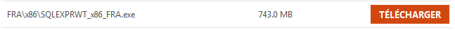 |
Une fois le SGBD installé, nous le lançons :
| 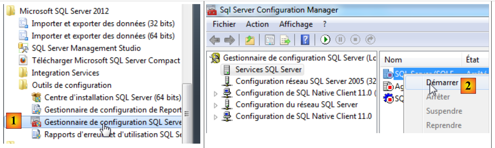 |
| 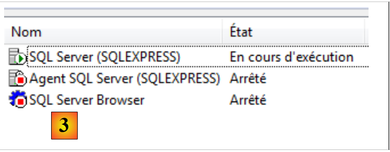 |
- [1] : dans le Menu Démarrer, lancer le " Gestionnaire de configuration SQL Server " ;
- [2] : dans ce gestionnaire, lancer le serveur ;
- [3] : il est lancé.
Nous lançons maintenant l'outil d'administration de SQL Server :
- [1] : dans le Menu Démarrer, lancer " SQL Server Management Studio " ;
- [2] : l'outil d'administration.
Nous allons nous connecter au serveur :
 |
- en [1], on connecte l'explorateur d'objets ;
- en [2], on donne les paramètres de la connexion :
- [3] : le serveur (local) (attention aux parenthèses nécessaires) désigne le serveur installé sur la machine,
- [4] : on choisit l'authentification Windows. Il faut être administrateur de son poste pour que cette connexion réussisse,
- [5] : on se connecte ;
| 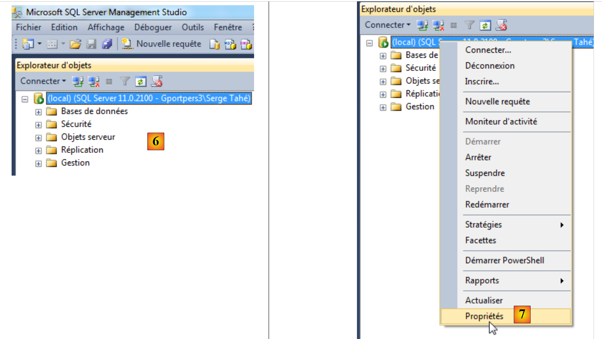 |
- [6] : on est connecté ;
- [7] : on veut modifier certaines propriétés du serveur ;
| 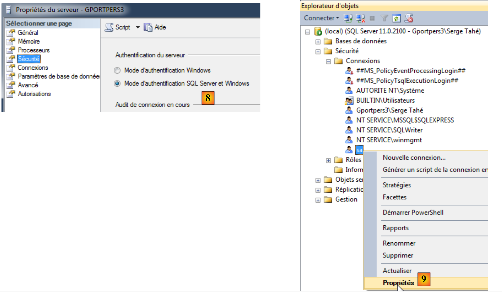 |
- [8] : on demande à ce qu'il y ait deux modes d'authentification :
- authentification Windows comme il vient d'être utilisé. Un utilisateur windows avec les bons droits peut alors se connecter,
- authentification SQL Server. L'utilisateur doit faire partie des utilisateurs enregistrés dans le SGBD ;
Ceci fait, on peut valider les propriétés du serveur ;
- [9] : on édite les propriétés de l'utilisateur sa (system administrator) ;
| 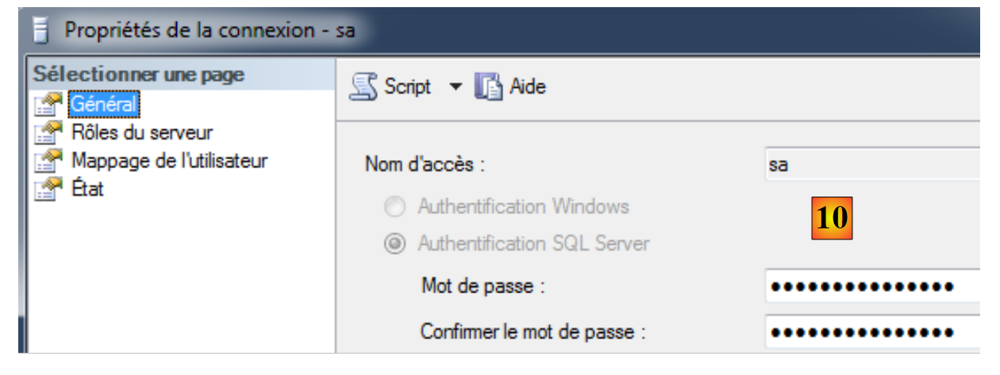 |
- en [10], on lui fixe un mot de passe. Dans la suite du document, celui-ci est sqlserver2012 ;
| 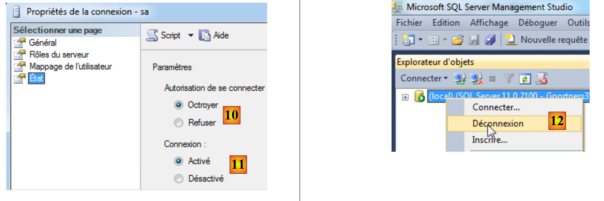 |
- en [10], on lui donne l'autorisation de se connecter ;
- en [11], la connexion est activée. Ceci fait l'assistant peut être validé ;
- en [12], on se déconnecte du serveur.
Maintenant, nous nous reconnectons avec le login sa/sqlserver2012 :
| 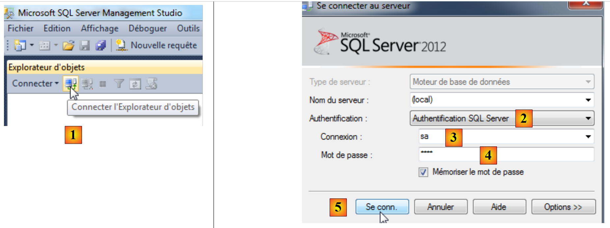 |
- en [1], on se reconnecte ;
- en [2], en authentification SQL Server ;
- en [3], l'utilisateur est sa ;
- en [4], son mot de passe est sqlserver2012 ;
- en [5], on se connecte ;
| 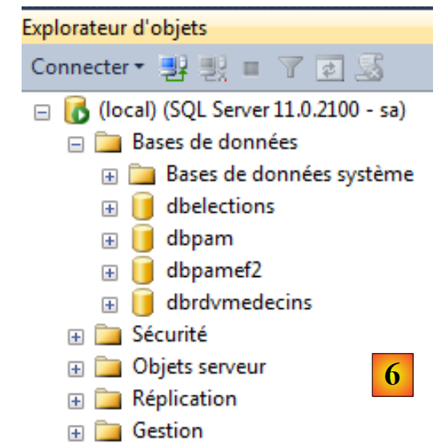 |
- en [6], on est connecté.
Nous allons maintenant créer une base de démonstration :
| 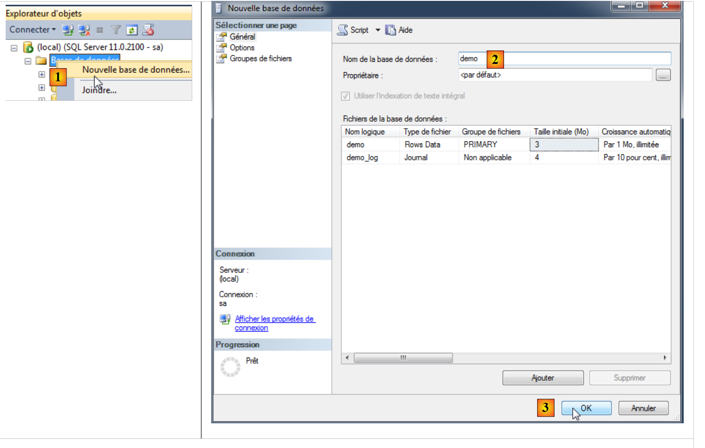 |
- en [1], on crée une nouvelle BD ;
- en [2], elle s'appellera demo ;
- en [3], on valide ;
| 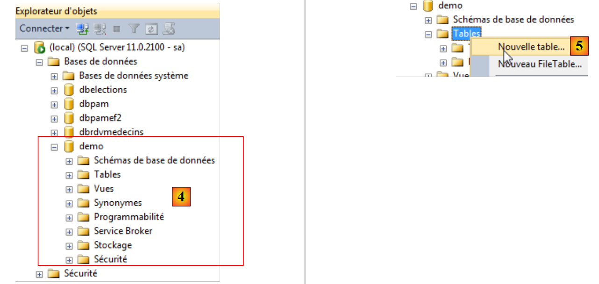 |
- en [4], la base créée ;
- en [5], on crée une nouvelle table à la base demo ;
| 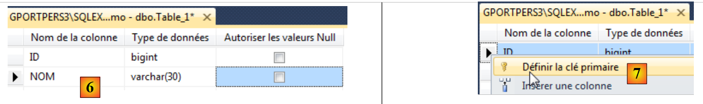 |
| 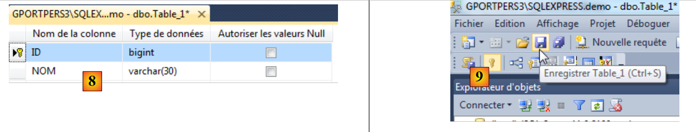 |
| 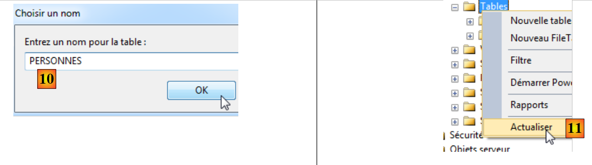 |
| 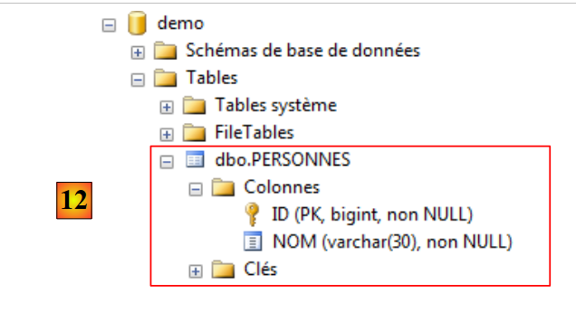 |
- en [6], on définit une table à deux colonnes ID et NOM ;
- en [7], on fait de la colonne [ID] la clé primaire ;
- en [8], la clé primaire est symbolisée par une clé ;
- en [9], on sauvegarde la table ;
- en [10], on lui donne un nom ;
- en [11], pour que la table apparaisse dans la base [demo], il faut actualiser la base ;
- en [12], la table [PERSONNES] a bien été créée.
Nous en savons assez pour l'instant sur l'utilisation de l'outil d'administration de SQL Server.
3.3. Le serveur embarqué (localdb)\v11.0
VS Express 2012 vient avec un serveur SQL embarqué. On suppose ici que VS Express 2012 a été installé [http://www.microsoft.com/visualstudio/fra/downloads]. On lance VS 2012 [1] :
| 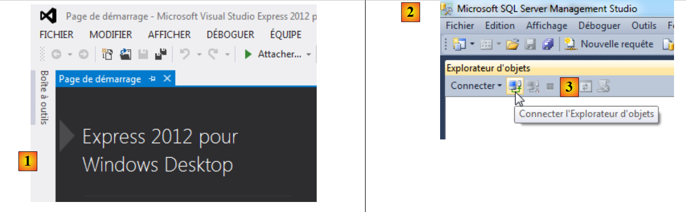 |
On lance l'outil d'administration de SQL Server 2012 [2] et on se connecte [3].
 |
- en [4], on se connecte au serveur (localdb)\v11.0 ;
- en [5], avec une authentification Windows ;
- en [6], la connexion réussie affiche les bases de données du serveur. On pourrait comme précédemment créer une nouvelle base.
Nous n'utiliserons pas ce serveur embarqué dans VS 2012.
3.4. Création de la base à partir des entités
Entity Framework 5 Code First permet de créer une base de données à partir des entités. C'est ce que nous voyons maintenant. Avec VS Express 2012, nous créons un premier projet console en C# :
| 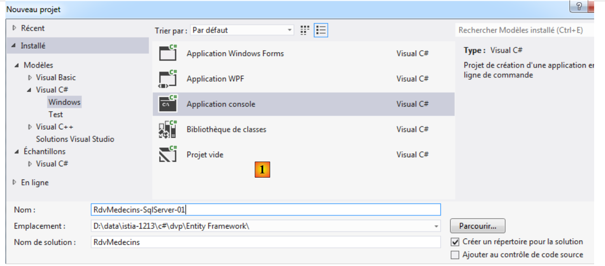 |
| 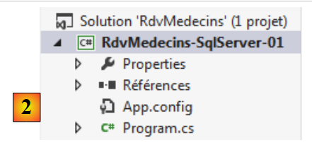 |
- en [1], la définition du projet ;
- en [2], le projet créé.
Tous nos projets vont avoir besoin de la DLL d'Entity Framework 5. Nous l'ajoutons :
| 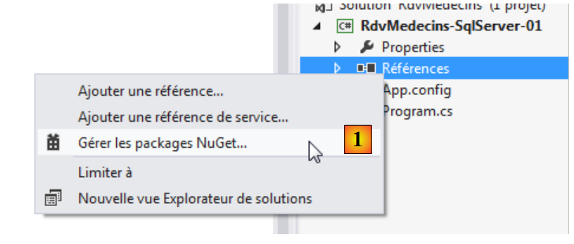 |
- en [1], l'outil NuGet permet de télécharger des dépendances ;
 |
- en [2], on télécharge la dépendance Entity Framework ;
- en [3], la référence a été ajoutée au projet.
On peut en savoir plus en regardant les propriétés de la référence ajoutée :
| 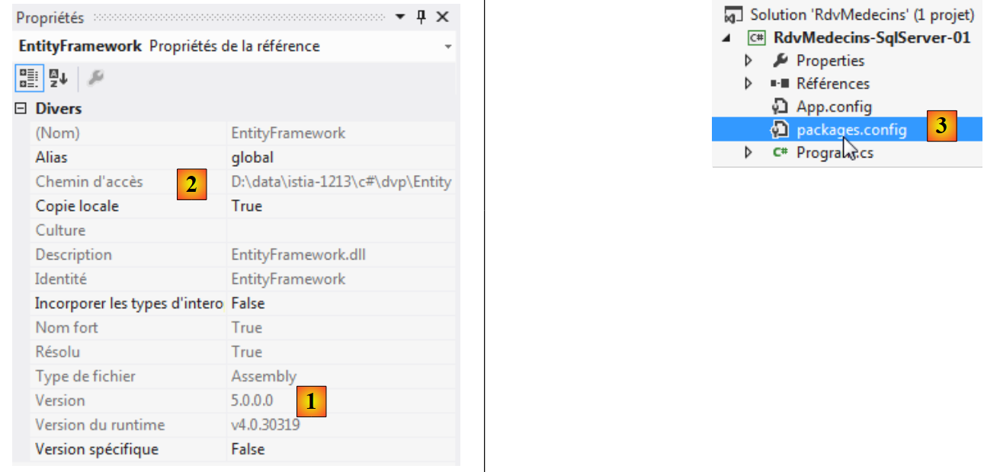 |
- en [1], la version de la DLL. Il faut la version 5 ;
- en [2], sa place dans le système de fichiers : <solution>\packages\EntityFramework.5.0.0\lib\net45\EntityFramework.dll où <solution> est le dossier de la solution VS. Tous les packages ajoutés par NuGet iront dans le dossier <solution>/packages ;
- en [3], un fichier [packages.config] a été créé. Son contenu est le suivant :
Il liste les paquetages importés par NuGet.
Revenons au projet VS et créons un dossier [Models] dans le projet :
| 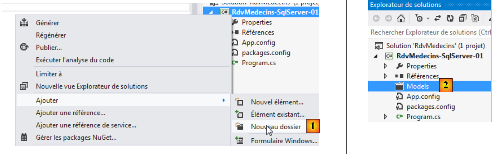 |
- en [1], ajout d'un dossier au projet ;
- en [2], il s'appellera [Models].
Nous garderons cette habitude par la suite de mettre la définition de nos entités dans le dossier [Models].
Pour construire nos entités, nous allons nous aider de la définition de la base de données MySQL 5 utilisée dans le projet NHibernate. Rappelons le rôle des entités EF :
| 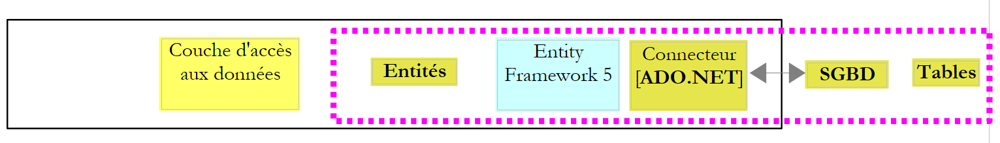 |
Les entités doivent refléter les tables de la base de données. La couche d'accès aux données utilise ces entités au lieu de travailler directement avec les tables. Commençons par la table [MEDECINS] :
3.4.1. L'entité [Medecin]
Elle contient des informations sur les médecins gérés par l'application [RdvMedecins].
| 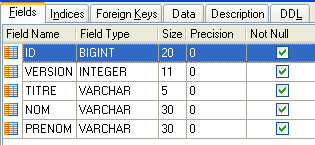 | 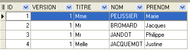 |
- ID : n° identifiant le médecin - clé primaire de la table
- VERSION : n° identifiant la version de la ligne dans la table. Ce nombre est incrémenté de 1 à chaque fois qu'une modification est apportée à la ligne.
- NOM : le nom du médecin
- PRENOM : son prénom
- TITRE : son titre (Melle, Mme, Mr)
Nous pourrions partir de la classe [Medecin] suivante :
- ligne 3 : la classe [Medecin] est associée à la table [MEDECINS] de la base de données. Celle-ci se trouvera dans un schéma nommé " dbo ".
Nous mettons cette classe dans un fichier [Entites.cs] [1]. C'est là que nous placerons toutes nos entités.
| 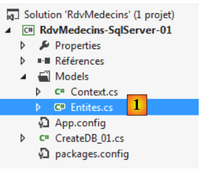 |
Toujours dans le dossier [Models], nous créons le fichier [Context.cs] suivant :
- ligne 8 : la classe [RdvMedecinsContext] va représenter le contexte de persistance, c.-à-d. l'ensemble des entités gérées par l'ORM. Elle doit dériver de la classe [System.Data.Entity.DbContext] ;
- ligne 11 : le champ [Medecins] va représenter les entités de type [Medecin] du contexte de persistance. Il est de type DbSet<Medecin>. On trouvera généralement autant de [DbSet] que de tables dans la base, un par table ;
- ligne 15 : on définit une classe [RdvMedecinsInitializer] pour initialiser la base créée. Ici elle dérive de la classe [DropCreateDataBaseAlways] qui comme son nom l'indique supprime la base si elle existe déjà puis la recrée. C'est pratique en phase de développement de la BD. Le paramètre de la classe [DropCreateDataBaseAlways] est le type de contexte de persistance associé à la base. On peut utiliser d'autres classes mères que [DropCreateDataBaseAlways] pour la classe d'initialisation :
- [DropCreateDatabaseIfModelChanges] : recrée la base si les entités ont changé,
- [CreateDatabaseIfNotExists] : crée la base si elle n'existe pas ;
Il nous reste à créer un programme principal. Ce sera le suivant [CreateDB_01.cs] :
- ligne 12 : [System.Data.Entity.DataBase] est une classe offrant des méthodes statiques pour gérer la base associée à un contexte de persistance. La méthode statique [SetInitializer] permet de préciser la classe d'initialisation de la base. Cela ne lance pas l'initialisation ;
- ligne 13 : pour travailler avec un contexte de persistance, il faut instancier celui-ci. C'est ce qui est fait ici. On utilise une clause using afin que le contexte soit automatiquement fermé à la sortie de la clause. Donc ligne 17, le contexte est fermé ;
- ligne 15 : on lance explicitement la génération de la base associée au contexte de persistance [RdvMedecinsContext]. Le paramètre false indique que cette opération ne doit pas être faite si elle a déjà été faite pour ce contexte. Ici, on aurait tout aussi bien pu mettre true.
Lorsqu'on travaille avec une base de données, les paramètres de connexion sont généralement inscrits dans le fichier [App.config]. Constatons que pour l'instant, ils n'y sont pas :
Les éléments ci-dessus ont été inscrits dans [App.config] lorsqu'on a ajouté la dépendance Entity Framework aux références du projet.
Exécutons le projet (Ctrl-F5) après avoir lancé SQL Server Express (c'est important) :
| 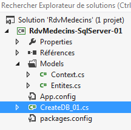 | 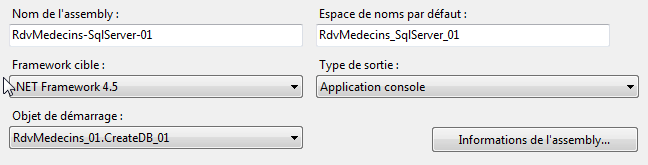 |
L'exécution doit se terminer sans erreur. Ouvrons maintenant l'outil d'administration de SQL Server et rafraîchissons l'affichage :
| 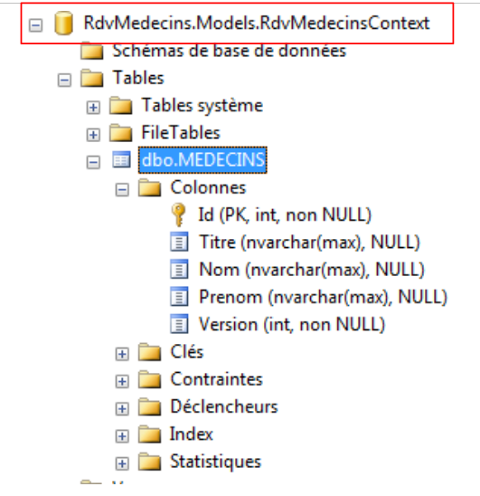 |
On constate qu'une base portant le nom complet de la classe [RdvMedecinsContext] a été créée et qu'elle contient une table [dbo.MEDECINS] (c'est le nom qu'on lui avait donné) avec des colonnes qui reprennent les noms des champs de l'entité [Medecin]. Si le code s'est bien exécuté et que la base ci-dessus n'apparaît pas, il faut regarder le serveur embarqué (localdb)\v11.0 (cf. page 18). Avec VS 2012 pro, ce serveur est utilisé si SQL server n'est pas actif au moment de l'exécution du code. Avec VS 2012 Express, non.
Examinons la structure de la table [MEDECINS] :
- elle reprend les noms des champs de l'entité [Medecin] ;
- la colonne [Id] est clé primaire. C'est une convention d'EF : si l'entité E a un champ Id ou Eid (MedecinId), alors cette colonne est clé primaire dans la table associée ;
- les types des colonnes de la table sont ceux des champs de l'entité ;
- pour les colonnes Titre, Nom, Prenom, un type [nvarchar(max)] a été utilisé. On pourrait être plus précis, 5 caractères pour le titre, 30 pour les nom et prénom ;
- les colonnes Titre, Nom, Prenom peuvent avoir la valeur NULL. Nous allons changer cela.
Regardons les propriétés de la clé primaire [Id] :
 |
En [1], on voit que la clé primaire est de type [Identité], ce qui signifie que sa valeur est automatiquement générée par SQL Server. Nous adopterons cette stratégie avec tous les SGBD.
Nous allons laisser moins de part aux conventions d'EF en utilisant des annotations. Le code de l'entité dans [Entites.cs] devient le suivant :
- lignes 2 et 3 : les annotations sont trouvées dans les espaces de noms [System.ComponentModel.DataAnnotations] (Key, Required, MaxLength] et [System.ComponentModel.DataAnnotations.Schema] (Column). On trouvera d'autres annotations à l'URL [http://msdn.microsoft.com/en-us/data/gg193958.aspx];
- ligne 11 : [Key] désigne la clé primaire ;
- ligne 12 : [Column] fixe le nom de la colonne correspondant au champ ;
- ligne 14 : [Required] indique que le champ est obligatoire (SQL NOT NULL) ;
- ligne 15 : [MaxLength] fixe la taille maxi de la chaîne de caractères, [MinLength] sa taille mini ;
Exécutons le projet avec cette nouvelle définition de l'entité [Medecin]. La base créée est alors la suivante :
| 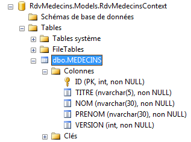 |
- les colonnes ont le nom qu'on leur a fixé ;
- l'annotation [Required] a été traduite par un SQL NOT NULL ;
- l'annotation [MaxLength(N)] a été traduite par un type SQL nvarchar(N).
Dans l'application NHibernate, la colonne [VERSION] était là pour prévenir les accès concurrents à une même ligne d'une table. Le principe est le suivant :
- un processus P1 lit une ligne L de la table [MEDECINS] au temps T1. La ligne a la version V1 ;
- un processus P2 lit la même ligne L de la table [MEDECINS] au temps T2. La ligne a la version V1 parce que le processus P1 n'a pas encore validé sa modification ;
- le processus P1 valide sa modification de la ligne L. La version de la ligne L passe alors à V2=V1+1 ;
- le processus P2 valide sa modification de la ligne L. L'ORM lance alors une exception car le processus P2 a une version V1 de la ligne L différente de la version V2 trouvée en base.
On appelle cela la gestion optimiste des accès concurrents. Avec EF 5, un champ jouant ce rôle doit avoir l'un des deux attributs [Timestamp] ou [ConcurrencyCheck]. SQL Server a un type [timestamp]. Une colonne ayant ce type voit sa valeur automatiquement générée par SQL Server à toute insertion / modification d'une ligne. Une telle colonne peut alors servir à gérer la concurrence d'accès. Pour reprendre l'exemple précédent, le processus P2 trouvera un timestamp différent de celui qu'il a lu, car entre-temps la modification faite par le processus P1 l'aura modifié.
Notre entité [Medecin] évolue comme suit :
- lignes 26-28 : la nouvelle colonne avec l'attribut [Timestamp] de la ligne 27. Le type du champ doit être byte[] (ligne 28). Le nom du champ peut être quelconque. On ne lui met pas l'attribut [Required] car ce n'est pas l'application qui fournira cette valeur mais le SGBD lui-même.
Si on exécute le projet avec cette nouvelle entité, la base évolue comme suit :
| 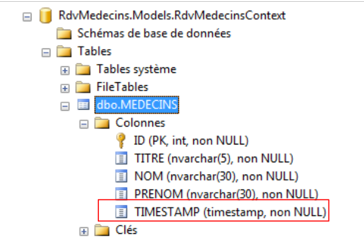 |
Il nous reste à régler un dernier point. Le contexte de persistance " sait " qu'une entité doit faire l'objet d'une insertion en base parce qu'alors elle a sa clé primaire égale à null. C'est l'insertion en base qui va donner une valeur à la clé primaire. Ici, le type int donné à la clé primaire [Id] ne convient pas parce que ce type n'accepte pas la valeur null. On lui donne alors le type int? qui accepte les valeurs int plus le pointeur null. L'entité [Medecin] utilisée sera donc la suivante :
Il nous reste à voir comment représenter dans une entité le concept de clé étrangère entre tables.
3.4.2. L'entité [Creneau]
La table [CRENEAUX] liste les créneaux horaires où les RV sont possibles :
| 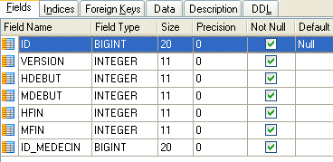 |
| 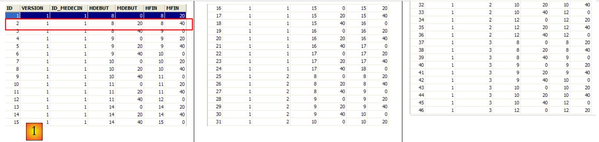 |
- ID : n° identifiant le créneau horaire - clé primaire de la table
- VERSION : n° identifiant la version de la ligne dans la table. Ce nombre est incrémenté de 1 à chaque fois qu'une modification est apportée à la ligne.
- ID_MEDECIN : n° identifiant le médecin auquel appartient ce créneau – clé étrangère sur la colonne MEDECINS(ID).
- HDEBUT : heure début créneau
- MDEBUT : minutes début créneau
- HFIN : heure fin créneau
- MFIN : minutes fin créneau
La seconde ligne de la table [CRENEAUX] (cf [1] ci-dessus) indique, par exemple, que le créneau n° 2 commence à 8 h 20 et se termine à 8 h 40 et appartient au médecin n° 1 (Mme Marie PELISSIER).
Avec ce que nous savons, nous pouvons définir l'entité [Creneau] comme suit dans [Entites.cs] :
La seule nouveauté réside aux lignes 20-21. Le fait que la table [CRENEAUX] ait une clé étrangère sur la table [MEDECINS] est reflété dans l'entité [Creneau] par la présence d'une référence sur l'entité [Medecin], ligne 21. Le nom du champ importe peu, seul le type est important. La propriété doit être déclarée virtuelle avec le mot clé virtual. En effet, EF est amené à redéfinir toutes les propriétés dites navigationnelles, c'-a-d celles qui correspondent à une clé étrangère et qui permettent de passer d'une table à l'autre.
Pour tester la nouvelle entité, il nous faut faire quelques modifications dans [Context.cs] :
La ligne 12 reflète le fait que le contexte a une entité de plus à gérer. Lorsque nous exécutons le projet, nous obtenons la nouvelle base suivante :
| 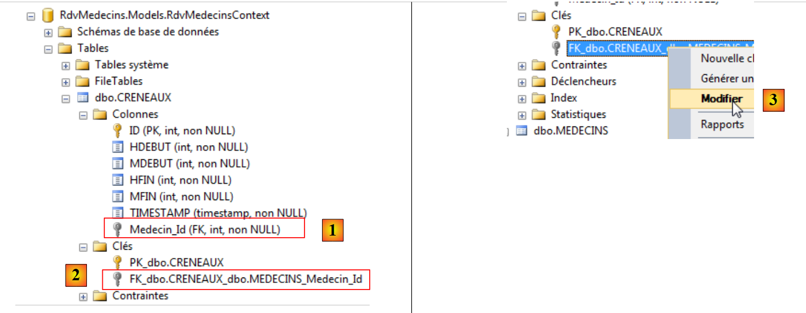 |
La table [CRENEAUX] a bien été créée et la nouveauté est la présence d'une clé étrangère [1] et [2]. Son nom a été généré à partir du nom du champ correspondant dans l'entité (Medecin) suffixé par " _Id ". Pour connaître les propriétés de cette clé étrangère, on essaie de la modifier [3].
| 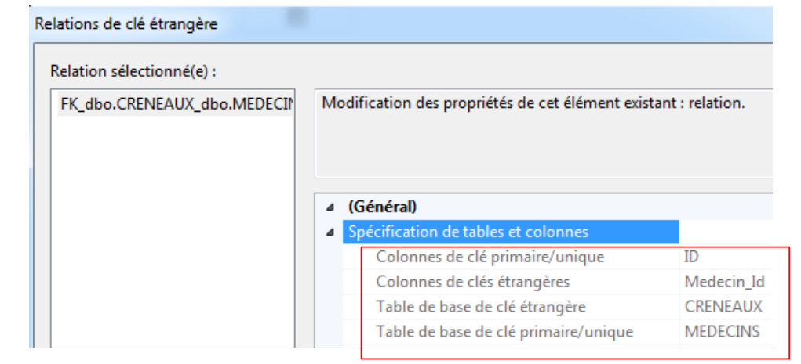 |
La copie d'écran ci-dessus montre que [Medecin_Id] est clé étrangère de la table [CRENEAUX] et qu'elle référence la clé primaire [ID] de la table [MEDECINS].
Si on crée les entités pour une base existante, la colonne clé étrangère ne s'appellera pas forcément [Medecin_Id]. Pour les autres colonnes, on avait vu que l'annotation [Column] réglait ce problème. Bizarrement c'est plus compliqué pour une clé étrangère. Il faut procéder de la façon suivante :
- lignes 5-7 : on crée un champ du type de la clé étrangère (int). A l'aide de l'attribut [Column], on précise le nom de la colonne qui sera clé étrangère dans la table associée à l'entité ;
- ligne 9 : on ajoute l'annotation [ForeignKey] au champ de type [Medecin]. L'argument de cette annotation est le nom du champ (pas de la colonne) qui est associé à la colonne clé étrangère de la table.
L'exécution du projet crée cette fois-ci la table suivante :
 |
Ci-dessus, la colonne clé étrangère porte bien le nom qu'on lui a donné. Il faut noter que les champs :
n'ont donné naissance qu'à une seule colonne, la colonne [MEDECIN_ID]. Néanmoins, la présence du champ [MedecinId] est importante. Lors de la lecture d'une ligne de la table [CRENEAUX], elle recevra la valeur de la colonne [MEDECIN_ID], c'-à-d. la valeur de la clé étrangère sur la table [MEDECINS]. Cela est souvent utile.
Le champ [Medecin] ci-dessus reflète la relation plusieurs à un qui lie l'entité [Creneau] à l'entité [Medecin]. Plusieurs objets [Creneau] sont reliés à un même [Medecin]. La relation inverse, un objet [Medecin] est associé à plusieurs objets [Creneau] peut être modélisée par un champ supplémentaire dans l'entité [Medecin] :
Ligne 8, on a rajouté le champ [Creneaux] qui est une collection d'objets [Creneau]. Ce champ nous donnera accès à tous les créneaux horaires du médecin.
Lorsqu'on exécute de nouveau le projet, on constate que la table [MEDECINS] n'a pas bougé :
| 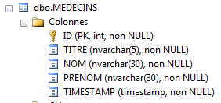 |
Aucune colonne n'a été rajoutée. La relation de clé étrangère qui existe entre la table [CRENEAUX] et la table [MEDECINS] est suffisante pour que EF sache générer les champs liés à celle-ci :
Nous savons l'essentiel. Nous pouvons terminer avec la création des deux autres entités.
3.4.3. Les entités [Client] et [Rv]
Avec ce que nous avons appris, nous pouvons écrire les entités [Client] et [Rv]. L'entité [Client] contient des informations sur les clients gérés par l'application [RdvMedecins].
| 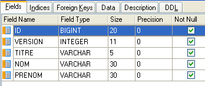 | 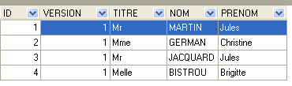 |
- ID : n° identifiant le client - clé primaire de la table
- VERSION : n° identifiant la version de la ligne dans la table. Ce nombre est incrémenté de 1 à chaque fois qu'une modification est apportée à la ligne.
- NOM : le nom du client
- PRENOM : son prénom
- TITRE : son titre (Melle, Mme, Mr)
L'entité [Client] pourrait être la suivante :
La classe [Client] est quasi identique à la classe [Medecin]. On pourrait les faire dériver d'une même classe parent. La nouveauté est ligne 21. Elle reflète le fait qu'un client peut avoir plusieurs rendez-vous et dérive de la présence d'une clé étrangère de la table [RVS] vers la table [CLIENTS].
L'entité [Rv] représente un rendez-vous :
| 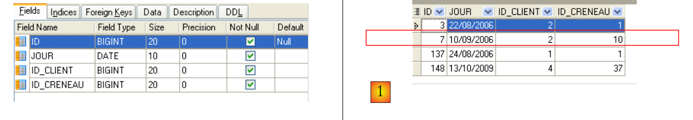 |
- ID : n° identifiant le RV de façon unique – clé primaire
- JOUR : jour du RV
- ID_CRENEAU : créneau horaire du RV - clé étrangère sur la colonne [ID] de la table [CRENEAUX] – fixe à la fois le créneau horaire et le médecin concerné.
- ID_CLIENT : n° du client pour qui est faite la réservation – clé étrangère sur la colonne [ID] de la table [CLIENTS]
L'entité [Rv] pourrait être la suivante :
- lignes 5-7 : clé primaire ;
- lignes 8-10 : date du rendez-vous ;
- lignes 11-12 : la clé étrangère de la table [RVS] vers la table [CLIENTS] ;
- lignes 13-15 : le client qui a rendez-vous ;
- lignes 16-17 : la clé étrangère de la table [RVS] vers la table [CRENEAUX] ;
- lignes 18-20 : le créneau horaire du rendez-vous ;
- lignes 21-23 : le champ de gestion des accès concurrents.
Ligne 17, on voit une relation plusieurs à un : à un créneau horaire peuvent correspondre plusieurs rendez-vous (pas le même jour). La relation inverse peut être reflétée dans l'entité [Creneau] :
Ligne 4, la collection des rendez-vous pris sur ce créneau horaire.
Lorsqu'on exécute le projet, la base générée est la suivante :
| 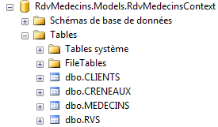 |
Les tables [MEDECINS] et [CRENEAUX] n'ont pas changé. Les tables [CLIENTS] et [RVS] sont les suivantes :
| 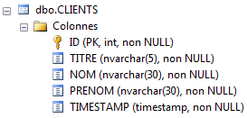 |  |
C'est ce qui était attendu. Il nous reste quelques détails à régler :
- gérer le nom de la base. Ici il a été généré par EF ;
- remplir la base avec des données.
3.4.4. Fixer le nom de la base
Pour fixer le nom de la base générée par EF, nous utiliserons une chaîne de connexion définie dans [App.config]. Ce fichier de configuration évolue comme suit :
- lignes 15-19 : la chaîne de connexion à la base ;
- ligne 16 : l'attribut [name] reprend le nom de la classe [RdvMedecinsContext] utilisé pour le contexte de persistance. Il est important de s'en souvenir. Cette contrainte peut être contournée dans le constructeur du contexte :
Dans ce cas, on pourra avoir name= "monContexte ". C'est ce que nous aurons dans la suite du document.
- ligne 17 : la chaîne de connexion. [Data Source] : le nom du serveur sur lequel se trouve le SGBD, [Initial Catalog] : le nom de la base de données, donc ici [rdvmedecins-ef], [User Id] : le propriétaire de la connexion, [Password] : son mot de passe. Le lecteur adaptera cette chaîne à son environnement ;
- lignes 21-29 : définissent un [DbProviderFactory]. Je ne sais pas ce que c'est. Si j'en crois le nom, ce pourrait être une classe permettant de générer la couche [ADO.NET] qui sépare EF du SGBD :
| 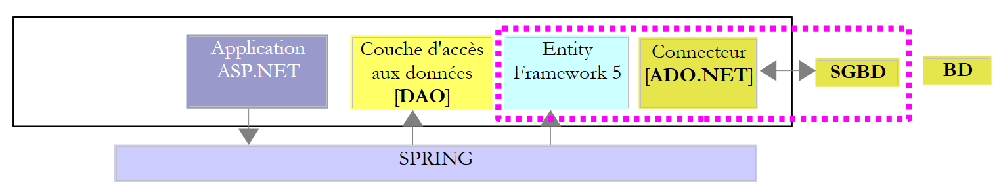 |
En fait, ces lignes sont inutiles pour SQL Server mais j'ai du les ajouter pour les autres SGBD. Aussi c'est pour mémoire que je les mets là. Elles ne gênent pas. Le seul point important est la version de la ligne 27. C'est celle de la DLL [System.Data] présente dans les références du projet :
| 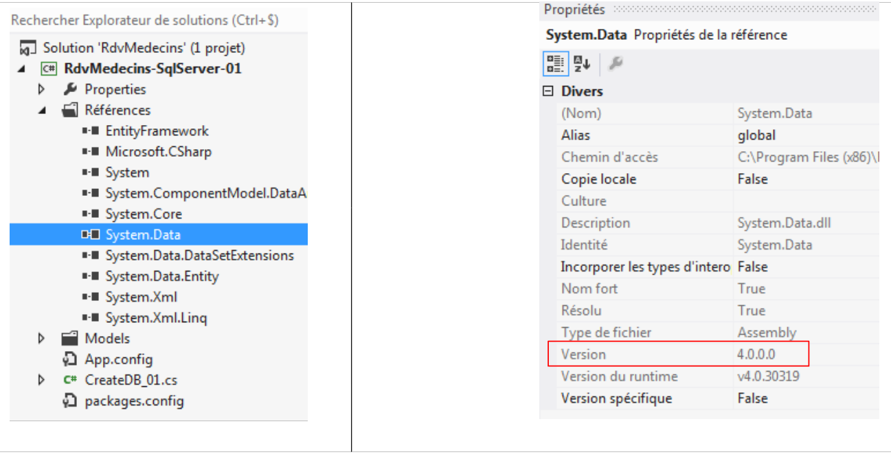 |
Voilà. Nous sommes prêts. Nous exécutons le projet et nous obtenons la base [rdvmedecins-ef] suivante :
| 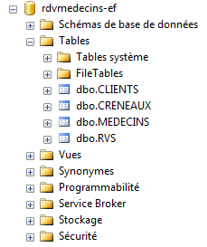 |
Ce sera notre base définitive. Il nous reste à mettre des données dedans.
3.4.5. Remplissage de la base
La classe d'initialisation de la base peut être utilisée pour y insérer des données :
- ligne 6 : l'initialisation se passe dans la méthode [Seed]. Celle-ci existe dans la classe mère. Elle est ici redéfinie. L'argument est le contexte de persistance [RdvMedecinsContext] de l'application ;
- ligne 8 : l'argument est passé à la classe mère ; il est probable que celle-ci ouvre le contexte de persistance qu'on lui a passé car cette ouverture n'est plus nécessaire par la suite ;
- lignes 11-16 : création de 4 clients ;
- lignes 17-20 : ceux-ci sont ajoutés au contexte de persistance, plus exactement aux médecins de celui-ci. On notera la méthode [Add] qui permet cela. Il faut se rappeler ici la définition du contexte :
On dit aussi que les clients ont été attachés au contexte, c'-à-d. qu'ils sont désormais gérés par EF. Avant ils en étaient détachés. Ils existaient en tant qu'objets mais n'étaient pas gérés par EF ;
- lignes 21-27 : création de 4 médecins ;
- lignes 28-31 : on les met dans le contexte de persistance ;
- lignes 33-70 : création de créneaux horaires. Lignes 34-57, pour le médecin medecins[0], lignes 58-69, pour le médecin medecins[1]. Les autres médecins sont sans créneaux horaires ;
- lignes 71-74 : on met ces créneaux dans le contexte de persistance ;
- ligne 76 : création d'un rendez-vous pour le 1er client avec le 1er créneau horaire et sa mise dans le contexte de persistance.
Lorsqu'on exécute le projet, on obtient la base suivante :
| 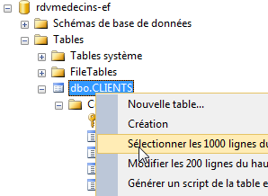 | 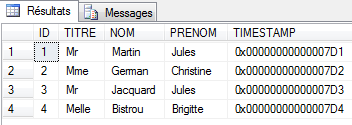 |
Ci-dessus, on voit la table [CLIENTS] remplie.
3.4.6. Modification des entités
Actuellement, les classes [Medecin] et [Client] sont quasi identiques. En fait si on enlève les champs ajoutés pour la gestion de la persistance avec EF 5, elles sont identiques. Nous allons les faire dériver d'une classe [Personne]. Ces deux entités deviennent alors les suivantes :
Lorsqu'on exécute le projet, on obtient la même base. EF 5 a mappé les classes les plus basses de l'héritage chacune dans une table. En fait, EF 5 a différentes stratégies de génération de tables pour représenter l'héritage d'entités. Nous ne les présenterons pas ici. On pourra lire par exemple " Entity Framework Code First Inheritance : Table Per Hierarchy and Table Per Type ", à l'URL [http://www.codeproject.com/Articles/393228/Entity-Framework-Code-First-Inheritance-Table-Per].
Nous utiliserons désormais cette version des entités.
3.4.7. Ajouter des contraintes à la base
Il nous reste un détail à régler. La table [RVS] des rendez-vous est la suivante :
| 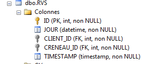 |
Cette table doit avoir une contrainte d'unicité : pour un jour donné, un créneau horaire d'un médecin ne peut être réservé qu'une fois pour un rendez-vous. En termes de table, cela signifie que le couple (JOUR,CRENEAU_ID) doit être unique. Je ne sais pas si cette contrainte peut être exprimée directement dans le code, soit sur les entités soit sur le contexte. C'est probable mais je n'ai pas vérifié. Nous allons prendre une autre démarche. Nous allons utiliser un client d'administration de SQL Server pour ajouter cette contrainte.
Avec " SQL Server Management Studio ", je n'ai pas trouvé de méthode simple pour ajouter cette contrainte hormis exécuter l'ordre SQL qui la crée :
| 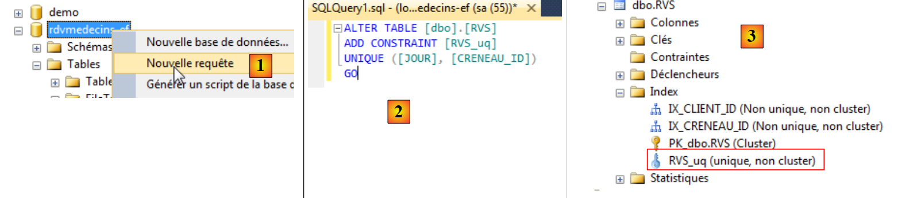 |
- en [1] on crée une requête SQL pour la base [rdvmedecins-ef] ;
- en [2], la requête SQL qui crée la contrainte d'unicité ;
- en [3], l'exécution de cette requête a créé un nouvel index dans la table [RVS].
Il existe d'autres outils d'administration de SQL Server. Nous allons utiliser ici l'outil EMS SQL Manager for SQL Server Freeware [http://www.sqlmanager.net/fr/products/mssql/manager/download]. Une fois installé, nous le lançons :
| 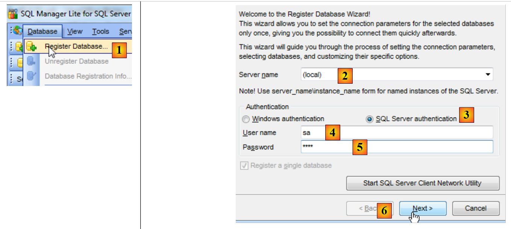 |
- en [1], on enregistre une base de données ;
- en [2], on se connecte au serveur (local) ;
- en [3], avec une authentification SQL Server ;
- en [4], sous l'identité sa ;
- en [5], et le mot de passe sqlserver2012 ;
- en [6], on passe à l'étape suivante ;
| 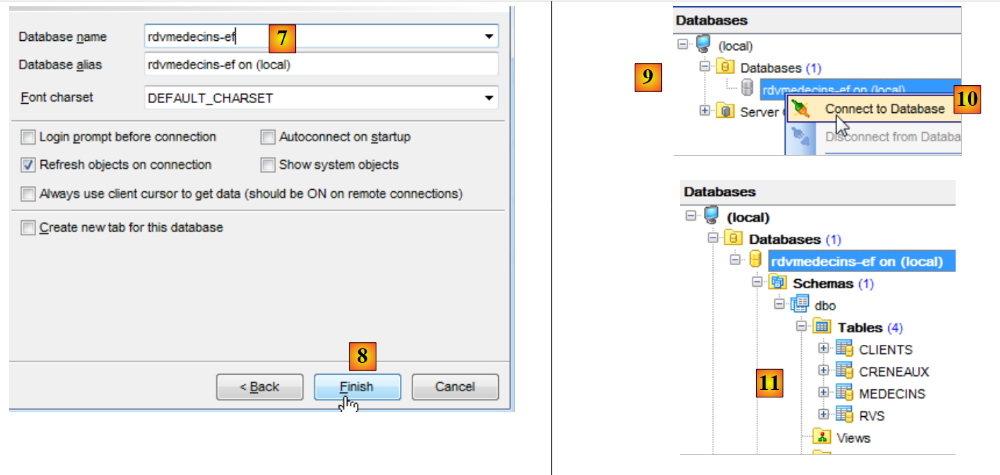 |
- en [7], on choisit la base [rdvmedecins-ef] ;
- en [8], on termine l'assistant ;
- en [9], la base apparaît dans l'arborescence des bases. On s'y connecte [10] ;
- en [11], on est connecté.
" SQL Manager Lite for SQL Server " permet de créer la contrainte d'unicité sur la table [RVS].
| 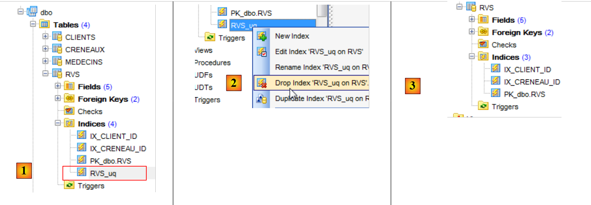 |
- en [1], on voit la contrainte d'unicité que nous avons créée précédemment ;
- en [2], on la supprime ;
- en [3], l'indice correspondant à cette contrainte d'unicité a disparu.
On recrée la contrainte supprimée :
- en [1], on crée un nouvel index pour la table [RVS] ;
- en [2], on lui donne un nom ;
- en [3], c'est une contrainte d'unicité ;
- en [4], sur les colonnes JOUR et CRENEAU_ID ;
L'onglet DDL nous donne le code SQL qui va être exécuté :
- en [6], on compile l'ordre SQL ;
- en [7], on confirme ;
- en [8], le nouvel indice est apparu.
L'interface offerte par " SQL Manager Lite for SQL server " est analogue à celle offerte par " SQL Server Management Studio ". On peut trouver des interfaces analogues pour les SGBD Oracle, PostgreSQL, Firebird, MySQL. Aussi continueron-nous désormais avec cette famille d'outils d'administration de SGBD.
Pour avoir accès aux informations d'une table, il suffit de double-cliquer dessus :
Les informations sur la table sélectionnée sont disponibles dans des onglets. Ci-dessus, on voit l'onglet [Fields] de la table [CLIENTS]. L'onglet [Data] affiche le contenu de la table :
3.4.8. La base définitive
Nous avons notre base définitive. Nous exportons son script SQL afin de pouvoir la régénérer si besoin est.
- en [1], début de l'assistant ;
- en [2], le serveur ;
- en [3], la base de données qui va être exportée ;
- en [4], précisez le nom du fichier où sera enregistré le script SQL ;
- en [5], précisez son encodage ;
- en [6], précisez ce que vous voulez extraire (tables, contraintes, données) ;
- en [7], vous pouvez affiner le script qui va être généré ;
- en [8], terminez l'assistant.
Le script a été généré et chargé dans l'éditeur de script. Vous pouvez consulter le code SQL généré. Nous allons reconstruire la base de données à partir de ce script.
- en [1], on supprime la base ;
- en [2] et [3], on la recrée ;
- en [4], on s'authentifie ;
- en [5], on exécute le script SQL de création de la base ;
- en [6], on l'enregistre dans " SQL Manager " ;
- en [7], on se connecte à la base qui vient d'être créée ;
- en [8], la base n'a pour l'instant pas de tables ;
- en [9a], on ouvre un éditeur de script SQL ;
- en [9b], on ouvre le script SQL créé précédemment ;
- en [10], on l'exécute ;
- en [11], les tables ont été créées ;
- en [12], elles sont remplies ;
- en [14], nous retrouvons la contrainte d'unicité que nous avions créée pour la table [RVS].
Nous allons désormais travailler avec cette base existante. Si elle est détruite ou détériorée, nous savons la régénérer.
3.5. Exploitation de la base avec Entity Framework
Nous allons :
- ajouter, supprimer, modifier des éléments de la base ;
- requêter la base avec LINQ to Entities ;
- gérer les accès concurrents à un même élément de la base ;
- comprendre les notions de Lazy Loading / Eager Loading ;
- découvrir que la mise à jour de la base par le contexte de persistance se fait dans une transaction.
3.5.1. Suppression d'éléments du contexte de persistance
Nous avons une base remplie. Nous allons la vider. Nous créons une nouvelle classe [Erase.cs] dans le projet actuel [1] :
La classe [Erase] est la suivante :
- ligne 9 : les opérations sur un contexte de persistance se font toujours dans une clause [using]. Cela assure qu'à la sortie du [using], le contexte a été fermé ;
- ligne 13 : on parcourt le contexte des clients [context.Clients]. Tous les clients de la base vont être mis dans le contexte de persistance ;
- ligne 15 : pour chacun d'eux on fait l'opération [Remove] qui les supprime du contexte. En fait, ils sont toujours dans le contexte mais dans un état " supprimé " ;
- lignes 18-21 : on fait la même chose pour les médecins ;
- ligne 23 : on sauvegarde le contexte de persistance en base.
Lors de la sauvegarde du contexte en base, les entités du contexte qui :
- ont une clé primaire null font l'objet d'une opération SQL INSERT ;
- sont dans un état " supprimé " font l'objet d'une opération SQL DELETE ;
- sont dans un état " modifié " font l'objet d'une opération SQL UPDATE ;
Comme nous le constaterons ultérieurement, ces opérations SQL se font à l'intérieur d'une transaction. Si l'une d'elles échoue, tout ce qui a été fait précédemment est défait.
Faisons du programme [Erase] le nouvel objet de démarrage du projet [1] puis exécutons le projet.
Vérifions la base. On constatera que toutes les tables sont vides [2]. C'est étonnant, car nous avions demandé simplement la suppression des médecins et des clients. C'est par le jeu des clés étrangères que les autres tables ont été vidées en cascade.
La définition de la clé étrangère de la table [CRENEAUX] vers la table [MEDECINS] a été définie comme suit par le provider d'EF 5 :
- en [1], on sélectionne la table [CRENEAUX] ;
- en [2], on sélectionne l'onglet des clés étrangères ;
- en [3], on édite l'unique clé étrangère ;
- en [4], dans l'onglet DDL , la définition SQL de la contrainte de clé étrangère ;
- en [5], la clause ON DELETE CASCADE fait que la suppression d'un médecin entraîne la suppression des créneaux qui lui sont associés.
Les contraintes de clé étrangères de la table [RVS] sont définies de façon analogue :
- lignes 1-6 : supprimer un client supprimera là également les rendez-vous qui lui sont associés ;
- lignes 1-6 : supprimer un créneau supprimera également tous les rendez-vous qui lui sont associés.
3.5.2. Ajout d'éléments au contexte de persistance
Maintenant que nous avons vidé la base, nous allons la remplir de nouveau. Nous ajoutons au projet le programme [Fill.cs] [1].
Le programme [Fill.cs] est le suivant :
- ligne 10 : on ouvre le contexte de persistance ;
- lignes 13-20 : les lignes des tables [CLIENTS] et [MEDECINS] sont mises dans le contexte puis supprimées de celui-ci. Nous venons de voir que cela vidait totalement la base ;
- lignes 22-88 : des éléments sont ajoutés au contexte de persistance. Ils ont tous leur clé primaire à null. Ils seront donc insérés dans la base ;
- ligne 90 : les changements opérés sur le contexte sont synchronisés avec la base. Celle-ci va faire l'objet d'une série d'opérations SQL DELETE suivie d'une série d'opérations SQL INSERT ;
On fait du programme [Fill], le nouvel objet de démarrage du projet [1] puis on exécute ce dernier.
On constate en [2] que les tables ont été remplies.
3.5.3. Affichage du contenu de la base
Nous allons maintenant afficher le contenu de la base à l'aide de requêtes LINQ to Entity. LINQ (Language INtegrated Query) est apparu avec le framework .NET 3.5 en 2007. Il apparaît comme une extension des langages .NET, c.a.d qu'il est intégré au langage et sa syntaxe est vérifiée par le compilateur. Il permet de requêter différentes collections avec une syntaxe présentant des similitudes avec le langage SQL (Structured Query Language) de requêtage des bases de données. Il existe différentes moutures de LINQ :
- LINQ to Object, pour requêter des collections en mémoire ;
- LINQ to XML, pour requêter du XML ;
- LINQ to Entity, pour requêter des bases de données ;
Pour exister, LINQ s'appuie sur de nombreuses extensions faites aux langages .NET. Celles-ci peuvent être utilisées en-dehors de LINQ. Nous n'allons pas les présenter mais simplement donner deux références où le lecteur trouvera une description approfondie de LINQ :
- LINQ in Action, Fabrice Marguerie, Steve Eichert, Jim Wooley aux éditions Manning ;
- LINQ pocket reference, Joseph et Ben Albahari aux éditions O'Reilly.
J'ai lu le premier et l'ai trouvé excellent. Je n'ai pas lu le second mais ai lu des mêmes auteurs " C# 3.0 in a nutshell " à la sortie de LINQ. J'ai trouvé ce livre très au-dessus de la moyenne des livres que j'ai l'habitude de lire. Il semble que les autres livres de ces deux auteurs soient du même niveau. Nous allons par ailleurs utiliser LINQPad, un outil d'apprentissage de LINQ écrit par Joseph Albahari.
Nous allons afficher les entités présentes dans la base. Pour cela, nous ajoutons à leurs classes deux méthodes d'affichage. Commençons par l'entité [Medecin] :
- lignes 27-30 : la méthode ToString de la classe. On notera qu'elle n'affiche pas la collection de la ligne 21 ;
- lignes 32-37 : la méthode ShortIdentity qui fait la même chose.
Il nous faut ici expliquer les notions de Lazy et Eager Loading pour mesurer l'impact des deux méthodes précédentes. Nous avons vu qu'une entité pouvait avoir des dépendances sur une autre entité. Elles sont de deux natures :
- de un à plusieurs, comme ci-dessus où un médecin est relié à plusieurs créneaux horaires ;
- de plusieurs à un, comme dans l'entité [Creneau] ci-dessous où un plusieurs créneaux sont reliés au même médecin ;
Lorsque les dépendances sont chargées en même temps que les entités auxquelles elles sont attachées, on parle d'Eager Loading. Sinon, on parle de Lazy Loading : les dépendances ne sont chargées que lorsqu'elles sont référencées la première fois. Par défaut, EF 5 utilise le Lazy Loading : les dépendances ne sont pas chargées en même temps que l'entité.
Voyons notre méthode [ToString] ci-dessus :
La méthode [ToString] n'affiche pas la dépendance [Creneaux] de la ligne 2. Si elle l'avait fait, elle aurait alors forcé le chargement de tous les créneaux du médecin avant son exécution. C'est pour éviter ce chargement coûteux que la dépendance n'a pas été incluse dans la signature de l'entité. De façon générale, nous allons inclure deux signatures dans chaque entité :
- une méthode ToString qui affichera l'entité et ses éventuelles dépendances plusieurs à un. Comme il vient d'être expliqué cela provoquera le chargement de la dépendance ;
- une méthode ShortIdentity qui ne référencera aucune dépendance. Il n'y aura donc aucun chargement de dépendance ;
Les méthodes d'affichage des autres entités seront les suivantes :
L'entité [Client] :
- lignes 9-12 : la méthode [ToString] n'affiche pas la dépendance de la ligne 6 ;
L'entité [Creneau] :
- ligne 16 : la méthode [ToString] référence la dépendance de la ligne 9. Cela va forcer son chargement ;
- ligne 11 : la dépendance [Rvs] n'est pas référencée. Elle ne sera pas chargée ;
- lignes 21-22 : la méthode [ShortIdentity] ne référence plus la référence [Medecin] de la ligne 9. Celle-ci ne sera donc pas chargée.
L'entité [Rv] :
- lignes 17-20 : la méthode [ToString] référence les dépendances des lignes 9 et 14. Cela va forcer leur chargement ;
- lignes 17-20 : la méthode [ShortIdentity] évite cela et donc les dépendances ne seront pas chargées.
En conclusion, on prêtera attention aux méthodes [ToString] des entités. Si on n'y prête pas attention, afficher une table peut charger la moitié de la base si la table a de nombreuses dépendances.
Ceci expliqué, on écrit le nouveau code [Dump.cs] suivant :
Nous allons expliquer les lignes 17-21 qui affiche les entités [Client]. L'explication donnée vaudra pour les autres entités.
- ligne 3 : le mot clé var a été introduit avec C# 3.0. Il permet d'éviter d'indiquer le type précis d'une variable. Le compilateur déduit alors celui-ci du type de l'expression affectée à la variable ;
- ligne 3 : l'expression affectée à la variable clients est une requête LINQ to Entity. On y reconnaît des mots clés du langage SQL portés dans LINQ. La syntaxe utilisée ici est la suivante :
Une syntaxe plus générale de LINQ est
La collection va être parcourue et pour chaque élément de celle-ci, la variable va être évaluée. Ceci n'est fait que lorsque la variable [clients] de la ligne 3 va être énumérée par le for / each des lignes 4-7. Tant que ceci n'est pas fait, la variable [clients] n'est qu'une requête non évaluée ;
- ligne 4 : la requête [clients] est énumérée. Cela va forcer l'évaluation de la requête. Les lignes de la table [CLIENTS] vont être amenées tour à tour dans le contexte de persistance ;
- ligne 6 : la méthode [ToString] de l'entité [Client] est utilisée pour l'affichage. Il n'y a aucun chargement de dépendances ;
Passons aux lignes suivantes du code :
- lignes 24-28 : les lignes de la table [MEDECINS] sont amenées dans le contexte de persistance et affichées. Il n'y a aucun chargement de dépendances ;
- lignes 31-35 : les lignes de la table [CRENEAUX] sont amenées dans le contexte de persistance et affichées. Nous avons vu que la méthode [ToString] de cette entité affichait la dépendance [Medecin]. Or celle-ci est déjà chargée. Il n'y aura donc pas de nouveau chargement ;
- lignes 38-42 : les lignes de la table [RVS] sont amenées dans le contexte de persistance et affichées. Nous avons vu que la méthode [ToString] de cette entité affichait les dépendances [Client] et [Creneau]. Or celles-ci sont déjà chargées. Il n'y aura donc pas de nouveaux chargements.
On notera que l'ordre d'affichage n'est pas neutre. Si on avait voulu afficher d'abord les entités [Rv], la méthode [ToString] de celle-ci aurait provoqué le chargement des entités [Client] et [Creneau] liées à ces rendez-vous. Les autres n'auraient pas été chargées. Elles l'auraient été plus tard dans un autre affichage. Cela a un impact sur les performances. Le code précédent a besoin de quatre ordres SQL pour faire afficher toutes les entités. Supposons maintenant qu'on exploite d'abord la tables [RVS] des rendez-vous. Une première requête SQL est nécessaire pour la table [RVS]. Ensuite, la méthode [ToString] de l'entité [Rv] va provoquer le chargement éventuel des entités [Client] et [Creneau] associées. Il faut une requête SQL pour chacune. En supposant qu'il y ait N2 clients et N3 créneaux et que toutes ces entités soient référencées dans la table [RVS], l'affichage de celle-ci nécessitera 1+N2+N3 requêtes SQL. Donc, on n'est moins performant que dans la version étudiée. Pour afficher la table [RVS] avec ses dépendances, une jointure entre tables serait nécessaire. Il est possible de la réaliser avec LINQ. Nous y reviendrons sur un exemple. Pour l'instant, nous nous rappellerons que nous devons prêter attention aux requêtes SQL sous-jacentes à notre code LINQ.
On paramètre le projet pour exécuter ce nouveau code [1] et [2] puis on l'exécute :
L'affichage console est le suivant :
3.5.4. Apprentissage de LINQ avec LINQPad
Nous avons utilisé ci-dessus, des requêtes LINQ to Entity pour afficher le contenu des tables de la base de données. Joseph Albahari a écrit un programme d'apprentissage des différentes formes de LINQ. Nous le présentons maintenant.
LINQPad est disponible à l'URL suivante [http://www.linqpad.net/]. Une fois installé, nous le lançons [1] :
Le débutant LINQ pourra s'initier avec les exemples de l'onglet [Samples] [2] qui montrent de très nombreux exemples. Sélectionnons l'exemple [3] qui s'affiche alors dans une autre fenêtre [4]. Le code complet de l'exemple est celui-ci :
Les lignes 3-5 sont un exemple de requête LINQ to Object. La requête LINQ suit la syntaxe :
- variable désigne l'élément courant de la collection. Dans notre exemple, cette collection est la liste de mots résultats de la chaîne splittée ;
- la collection est ordonnée selon le paramètre élément1 de orderby. Dans notre exemple, la collection de mots sera ordonnée selon leur longueur ;
- le mot clé select désigne ce qu'on veut retirer de l'élément courant variable de la collection. Dans notre exemple, ce sera le mot.
Exécutons cette requête LINQ :
 |
- en [1] : une expression LINQ est exécutée par [F5] ou bien via le bouton d'exécution ;
- en [2] : l'affichage. Les mots sont affichés dans l'ordre de leur longueur. Ce simple exemple montre la puissance de LINQ ;
- en [3], il est possible de télécharger d'autres exemples, notamment ceux du livre " LINQ in action " [4] ;
- en [5], nous choisissons un exemple du livre ;
- ligne 4 : une nouvelle requête LINQ avec de nouveaux mots clés ;
- ligne 5 : la collection requêtée est le tableau de mots de la ligne 1 ;
- ligne 6 : la collection est triée dans l'ordre alphabétique des mots ;
- ligne 7 : la collection est regroupée dans (mot clé into) une nouvelle collection lengthGroups. lengthGroups.Key représente le facteur de regroupement (mot clé by), ici la longueur des mots. lengthGroups rassemble les mots ayant le même facteur de regroupement donc la même longueur ;
- ligne 8 : la collection lengthGroups est ordonnée par clé de regroupement descendant, donc ici par taille décroissante des mots ;
- ligne 9 : de cette collection, on produit de nouveaux objets (classes anonymes) ayant deux champs :
- Length : la longueur des mots,
- Words : les mots ayant cette longueur ;
Ici, on voit particulièrement l'intérêt du mot clé var de la ligne 4. Parce qu'on a utilisé une classe anonyme ligne 9, on ne sait pas désigner le type de la variable groups. Le compilateur lui, va donner un nom interne à la classe anonyme et va typer avec, la variable groups. Il sera capable ensuite de dire si la variable groups est utilisée correctement
- ligne 12 : parcours de la requête de la ligne 4. Ce n'est qu'à ce moment qu'elle est évaluée. On se rappelle que son exécution va produire une collection d'objets, précisés ligne 9 ;
- ligne 14 : on affiche la propriété Length de l'élément courant, donc une longueur de mots ;
- lignes 15-17 : on affiche chaque élément de la collection de la propriété Words, donc l'ensemble des mots ayant la longueur affichée précédemment.
Lorsque nous exécutons cette requête, nous obtenons le résultat suivant dans LINQPad :
Maintenant que nous avons vu quelques exemples de requêtes [LINQ to Object], voyons des requêtes [LINQ to Entity] qui vont nous permettre de requêter des bases de données. Nous allons tout d'abord nous connecter à la base de données SQL Server que nous avons créée et remplie :
- en [1], on ajoute une connexion à une base de données ;
- en [2], les moyens d'accès à la source de données. Pour accéder à la base SQL Server, nous utiliserons [LINQPad Driver] ;
- en [3], il est également possible de récupérer un contexte de persistance [DbContext] défini dans un assembly .exe ou .dll (option 3). Malheureusement, à ce jour (8 octobre 2012), Entity Framework 5 n'est pas supporté ;
- en [4], il est possible de télécharger des pilotes pour d'autres SGBD que SQL Server ;
- en [5], on téléchargera le driver pour les SGBD MySQL et Oracle ;
- en [6], le pilote téléchargé ;
- en [7], nous nous connectons à une base SQL Server ;
- en [8], la base est sur le serveur de nom (local) ;
- en [9], on se connecte avec l'authentification sa / sqlserver2012 ;
- en [10], à la base [rdvmedecins-ef] que nous avons créée ;
- en [11], on peut tester la connexion ;
- en [12], on termine l'assistant ;
- en [13], la connexion apparaît dans LINQPad.
Les entités ont été créées à partir de la table [rdvmedecins-ef]. Ce sont les suivantes :
- en [1], [CLIENTS] représente l'ensemble des entités [Client]. Chaque entité a :
- les propriétés (ID, TITRE, NOM, PRENOM, TIMESTAMP),
- une relation 1 à plusieurs [CLIENTRVS] ;
- en [2], [CRENEAUXes] représente l'ensemble des entités [Creneau]. Chaque entité a :
- les propriétés (ID, HDEBUT, MDEBUT, HFIN, MFIN, MEDECIN_ID, TIMESTAMP),
- une relation 1 à plusieurs [CRENEAURVS],
- une relation plusieurs à 1 [MEDECIN] ;
- en [3], l'entité [MEDECINS] représente l'ensemble des entités [Medecin]. Chaque entité a :
- les propriétés (ID, TITRE, NOM, PRENOM, TIMESTAMP),
- une relation 1 à plusieurs [MEDECINCRENEAUXes] ;
- en [4], l'entité [RVS] représente l'ensemble des entités [Rv]. Chaque entité a :
- les propriétés (ID, JOUR, CLIET_ID, CRENEAU_ID, TIMESTAMP),
- une relation plusieurs à 1 [CLIENT],
- une relation plusieurs à 1 [CRENEAU].
On notera que les noms des propriétés ci-dessus sont différentes des noms que nous avons utilisés jusqu'à maintenant. Cela importe peu. Nous voulons juste apprendre les principes de base du requêtage sur base de données.
Voyons comment nous pouvons requêter cette base d'entités. Par exemple, nous voulons la liste des médecins ordonnée par leur TITRE et NOM :
- en [1], on crée une nouvelle requête ;
- en [2], le texte de la requête ;
- en [3], le résultat de la requête ;
- en [4], la même requête avec des expressions lambda. Une requête avec des expressions lambda est moins lisible qu'une requête texte et on pourrait vouloir s'en passer. Elles sont cependant parfois indispensables car elles permettent certaines choses que les requêtes texte ne permettent pas. Une expression lambda désigne une fonction à un paramètre d'entrée a et un paramètre de sortie b, sous la forme a=>b. La méthode OrderBy ci-dessus admet une fonction lambda comme unique paramètre. Celle-ci lui fournit le paramètre selon lequel doit être ordonnée une collection. Ainsi MEDECINS.OrderBy(m=>m.TITRE) est la liste des médecins ordonnée par les titres. Il faut lire l'instruction comme un pipe-line sur une collection. La collection des médecins est fournie en entrée à la méthode OrderBy. Celle-ci va exploiter les entités [Medecin] une par une. Dans l'expression lambda m=>m.TITRE, m représente l'entrée de la fonction lambda. On peut la nommer comme on veut. Ici, l'entrée de la fonction lambda sera une entité [Medecin]. La fonction m=>m.TITRE se lit comme suit : si j'appelle m mon entrée (une entité [Medecin]) alors ma sortie est m.TITRE, donc le titre du médecin. MEDECINS.OrderBy(m=>m.TITRE) est a son tour une collection, la collection des médecins ordonnée par les titres. Cette nouvelle collection peut alimenter une autre méthode, dans l'exemple la méthode ThenBy. Celle-ci fonctionne sur le même principe. Elle sert à indiquer des paramètres supplémentaires pour le tri de la collection.
Lire le code lambda équivalent au code texte que nous tapons habituellement est une bonne façon de l'apprendre ;
- en [5], l'ordre SQL émis sur la base. Là encore, on lira attentivement ce code. Il permet d'évaluer le coût réel d'une requête LINQ.
Dans la suite, nous présentons quelques exemples de requête LINQ. A chaque fois, nous montrons les résultats affichés et les codes lambda et SQL équivalents. Pour comprendre ces requêtes, il faut rappeler les relations plusieurs à un qui relient les entités les unes aux autres. C'est par elles qu'on navigue d'une entité à l'autre. On les appelle des propriétés navigationnelles.
// les clients dont le titre est Mr classés par ordre décroissant des noms
Résultats :
LINQ | |||
Lambda | |||
SQL |
// tous les créneaux horaires avec le médecin associé
Résultats (partiels) :
LINQ | |||
Lambda | |||
SQL |
// tous les rv avec le client et le médecin associés
Résultats :
// les médecins n'ayant pas de Rdv
Résultats :
LINQ | |||
Lambda | |||
SQL |
|
Il n'y a pas de requête LINQ pour cette demande. Il faut passer par des expressions lambda. Celle-ci se lit de la façon suivante : je prends la collection des médecins (MEDECINS) et je ne garde (Where) que les médecins (m) tels que je ne suis pas capable de trouver dans la collection des rendez-vous (RVS) un rendez-vous (rv) avec ce médecin (m).
// créneaux horaires de Mme Pélissier
Résultats (partiels) :
LINQ | |||
Lambda | |||
SQL |
// nombre de Rdv de Mme Pélissier le 08/10/2012
Résultats :
LINQ | |||
Lambda | |||
SQL |
|
// liste des clients ayant pris Rdv avec Mme Pélissier le 08/10/2012
Résultats :
LINQ | |||
Lambda | |||
SQL |
|
// nombre de créneaux horaires par médecin
Résultats :
LINQ | |
Lambda | |
SQL |
3.5.5. Modification d'une entité attachée au contexte de persistance
Nous avons vu les opérations suivantes sur le contexte de persistance :
- ajouter un élément au contexte ([dbContext].[DbSet].Add) ;
- supprimer un élément du contexte ([dbContext].[DbSet].Remove) ;
- requêter un contexte avec des requêtes LINQ.
Lorsqu'on veut synchroniser le contexte avec la base, on écrit [dbContext].SaveChanges().
Le code [ModifyAttachedEntity] illustre la modification d'une entité attachée au contexte :
|
- ligne 15 : ouverture contexte de l'application ;
- lignes 18-25 : le contexte est vidé. Très exactement, toutes les entités sont amenées dans le contexte à partir de la base de données puis passent dans un état " supprimé ". On notera qu'à ce stade la base n'a pas bougé. Tant que le contexte n'est pas synchronisé avec la base, celle-ci ne change pas. On se rappelle que supprimer les entités [Medecin] et [Client] suffit à vider la base par le jeu des suppressions en cascade ;
- lignes 27-28 : un nouveau client est ajouté à la base ;
- lignes 30-31 : on l'affiche avant sa sauvegarde dans la base ;
- ligne 33 : on synchronise le contexte avec la base. Les entitées marquées dans un état " supprimé " vont faire l'objet d'une opération SQL DELETE, l'entité ajoutée d'une opération SQL INSERT ;
- lignes 35-36 : on affiche le client après la synchronisation avec la base ;
Le résultat obtenu à la console est le suivant :
On notera les points suivants :
- avant la synchronisation avec la base, le client n'a ni clé primaire, ni timestamp,
- après la synchronisation, il les a. On rappelle ici, que la clé primaire a été configurée pour être générée par SQL Server. De même ce SGBD génère automatiquement le timestamp ;
- ligne 37 : le contexte de persistance est fermé. Les entités qu'il contenait deviennent " détachées ". Elles existent en tant qu'objets mais pas en tant qu'entités attachées à un contexte de persistance ;
- ligne 39 : on redémarre un nouveau contexte vide ;
- ligne 42 : on récupère le client directement dans la base via sa clé primaire. Il est alors amené dans le contexte. S'il n'est pas trouvé, la méthode Find rend le pointeur null ;
- lignes 48-49 : on l'affiche ;
Cela donne le résultat suivant :
- ligne 47 : on le modifie ;
- ligne 49 : on synchronise le contexte avec la base. EF va détecter que certains éléments du contexte ont été modifiés depuis qu'ils y ont été amenés. Pour ces éléments, il va générer des ordres SQL UPDATE sur la base. Donc ici, la synchronisation va consister en un unique ordre UPDATE ;
- ligne 50 : le deuxième contexte est fermé. L'entité client2 qui était attachée au contexte devient maintenant détachée de celui-ci ;
- ligne 52 : on ouvre un troisième contexte vide ;
- ligne 55 : on y amène de nouveau l'unique client de la base. On veut voir si la modification faite sur lui dans le contexte précédent a été répercutée dans la base ;
- lignes 57-58 : on affiche le client. Cela donne le résultat suivant :
Le nom du client a bien été modifié en base. On notera avec intérêt que son timestamp a été mis à jour.
- ligne 59 : on ferme le contexte. Au passage, on notera que contrairement aux deux fois précédentes, on n'a pas eu besoin auparavant de synchroniser le contexte avec la base (SaveChanges) car le contexte n'avait pas été modifié.
3.5.6. Gestion des entités détachées
Revenons à l'architecture en couches d'une application telle que celle de l'étude de cas :
La couche [DAO] utilise l'ORM EF5 pour accéder aux données. Nous avons les briques de base de cette couche. Chaque méthode ouvrira un contexte de persistance, fera dessus les opérations nécessaires (insertion, modification, suppression, requêtage) puis le fermera. Les entités gérées par la couche [DAO] vont remonter jusqu'à la couche web ASP.NET. Dans cette couche, elles sont hors contexte de persistance donc détachées. Dans la couche web, un utilisateur peut modifier ces entités (ajout, modification, suppression). Lorsqu'elles reviennent à la couche [DAO], elles sont toujours détachées. Or la couche [DAO] va devoir répercuter les modifications faites par l'utilisateur dans la base. Il va donc devoir travailler avec des entités détachées. Voyons les trois cas possibles :
Ajouter une entité détachée
C'est le cas normal pour un ajout. Il suffit d'ajouter (Add) l'entité détachée au contexte en s'assurant qu'elle a une clé primaire égale à null.
Modifier une entité détachée
On peut utiliser le code suivant :
- la méthode [DbContext].Entry(entité-détachée) va mettre l'entité dans le contexte ;
- l'état de cette entité est mis à " modifié " afin qu'elle fasse l'objet d'un ordre SQL UPDATE.
Supprimer une entité détachée
On peut utiliser le code suivant :
- ligne 1 : on met dans le contexte l'entité de même clé primaire que l'entité détachée ;
- ligne 2 : on la supprime :
On notera que cela nécessite en base un SELECT suivi d'un DELETE alors que normalement le seul DELETE est suffisant. On peut suivre également l'exemple de la modification d'une entité détachée et écrire :
Comme je n'ai pas pu mettre en oeuvre de logs sur les opérations SQL faites sur la base, je ne sais pas si une méthode est à conseiller plutôt que l'autre.
Voici un exemple :
Le code du programme [ModifyDetachedEntities] est le suivant :
|
- ligne 15 : la base est effacée ;
- lignes 17-25 : un client est ajouté en base ;
- ligne 27 : affiche le contenu de la base ;
- après la ligne 25, le contexte de persistance n'existe plus. Il n'y a donc plus d'entités attachées. L'entité client1 est passée dans l'état " détaché " ;
- ligne 29 : on modifie le nom de l'entité détachée ;
- ligne 31 : on ouvre un nouveau contexte vide ;
- ligne 35 : l'entité détachée client1 est mise dans le contexte dans un état " modifié " ;
- ligne 37 : le contexte est synchronisé avec la base ;
- ligne 38 : il est fermé ;
- ligne 40 : la base est affichée ;
Le nom du client a bien été modifié en base. On notera que le timestamp a été mis à jour ;
- ligne 42 : ouverture d'un nouveau contexte vide ;
- ligne 46 : l'entité détachée client1 est mise dans le contexte dans un état "supprimé" ;
- ligne 48 : le contexte est synchronisé avec la base ;
- ligne 49 : il est fermé ;
- ligne 51 : la base est affichée ;
L'entité a bien été supprimée en base.
Maintenant, nous voyons les deux modes de chargement des dépendances d'une entité : Lazy et Eager Loading.
3.5.7. Lazy et Eager Loading
Reprenons le schéma des dépendances plusieurs à un de nos quatre entités :
Ci-dessus, l'entité [Creneau] a une propriété navigationnelle [Creneau.Medecin] vers l'entité [Medecin]. On appelle cela une dépendance. Nous avons vu qu'il y avait également des dépendances un à plusieurs. Le principe qui va être expliqué s'applique également à elles.
Par défaut, EF 5 est en mode Lazy Loading : lorsqu'il amène une entité dans le contexte de persistance depuis la base, il n'amène pas ses dépendances. Celles-ci seront amenées lorsqu'elles seront utilisées la première fois. C'est une mesure de bon sens. Si ce n'était pas le cas, amener dans le contexte les rendez-vous amènerait d'après les dépendances ci-dessus :
- les entités [Creneau] liées aux rendez-vous ;
- les entités [Medecin] liées à ces créneaux ;
- les entités [Clients] liées aux rendez-vous.
Parfois cependant, on a besoin d'une entité et de ses dépendances. Nous allons illustrer les deux modes de chargement.
Le code de [LazyEagerLoading] est le suivant :
|
- ligne 18 : on part d'une base connue, celle utilisée jusqu'à maintenant. Après cette opération, les tableaux des lignes 11-13 sont remplis d'entités détachées ;
- lignes 21-22 : on s'intéresse au premier créneau et au médecin associé ;
- ligne 23 : nouveau contexte ;
- ligne 26 : on met le créneau dans le contexte avec sa dépendance (eager loading). Parce que ce n'est pas le mode par défaut, il faut demander explicitement cette dépendance. C'est la méthode Include qui permet cela. Son paramètre est le nom de la dépendance dans l'entité amenée dans le contexte. La requête qui amène l'entité dans le contexte utilise des expressions lambda. La méthode Single permet de préciser une condition permettant de ramener une unique entité. Ici, on recherche en base l'entité [Creneau] qui a la clé primaire du créneau n° 0 ;
- ligne 27 : on affiche l'entité ramenée. Rappelons les deux méthodes d'écriture utilisées dans les entités :
|
- lignes 2-5 : la méthode [ToString] affiche la dépendance [Medecin]. Si celle-ci n'est pas déjà dans le contexte, elle sera cherchée en base pour l'y mettre ;
- lignes 8-11 : la méthode [ShortIdentity] n'affiche pas la dépendance [Medecin]. Elle ne sera donc pas recherchée en base si elle n'est pas dans le contexte ;
A ce stade, l'affichage console est le suivant :
- ligne 28 : le contexte est fermé ;
- lignes 30-37 : on essaie d'écrire la dépendance [Medecin] de l'entité. On rappelle le fonctionnement en Lazy Loading : une dépendance est chargée lors de sa première utilisation si elle n'est pas présente. Ici, normalement elle est présente. L'affichage est le suivant :
- lignes 39-44 : dans le cadre d'un nouveau contexte, le créneau n° 0 est de nouveau cherché en base et amené dans le contexte. Ici, la dépendance [Medecin] n'est pas demandée explicitement. Elle ne sera donc pas amenée (Lazy Loading) ;
- ligne 43 : l'affichage de l'identité courte du créneau est la suivante :
Ici, il est important d'utiliser ShortIdentity au lieu de ToString pour afficher l'entité. Si on utilise ToString, la dépendance [Medecin] va être affichée et pour cela elle va être cherchée en base. Or on ne veut pas cela.
- ligne 44 : le contexte est fermé ;
- lignes 46-53 : on essaie d'afficher la dépendance de l'entité. Il est important de faire cela hors contexte sinon elle sera recherchée en base et trouvée. Ici on est hors contexte. L'entité [Creneau] est détachée et sa dépendance [Medecin] est absente (Lazy Loading). Que va-t-il se passer ? L'affichage écran est le suivant :
|
EF a trouvé la dépendance [Medecin] absente. Il a voulu la charger mais le contexte étant fermé, cette opération n'était plus possible. On mémorisera cette exception [System.ObjectDisposedException] car est elle caractéristique du chargement d'une dépendance en-dehors d'un contexte ouvert.
Maintenant examinons la concurrence d'accès aux entités.
3.5.8. Concurrence d'accès aux entités
Revenons sur la définition de l'entité [Client] :
|
Nous allons nous intéresser au champ [Timestamp] de la ligne 23. Nous savons que sa valeur est générée par le SGBD. Nous avons dit également que l'annotation [Timestamp] de la ligne 22 faisait que EF 5 utilisait le champ annoté pour gérer les concurrences d'accès aux entités. Rappelons ce qu'est une gestion de concurrence d'accès :
- un processus P1 lit une ligne L de la table [MEDECINS] au temps T1. La ligne a le timestamp TS1 ;
- un processus P2 lit la même ligne L de la table [MEDECINS] au temps T2. La ligne a le timestamp TS1 parce que le processus P1 n'a pas encore validé sa modification ;
- le processus P1 valide sa modification de la ligne L. Le timestamp de la ligne L passe alors à TS2 ;
- le processus P2 valide sa modification de la ligne L. L'ORM lance alors une exception car le processus P2 a un timestamp TS1 de la ligne L différent du timestamp TS2 trouvé en base.
On appelle cela la gestion optimiste des accès concurrents. Avec EF 5, un champ jouant ce rôle doit avoir l'un des deux attributs [Timestamp] ou [ConcurrencyCheck]. SQL server a un type [timestamp]. Une colonne ayant ce type voit sa valeur automatiquement générée par SQL Server à toute insertion / modification d'une ligne. Une telle colonne peut alors servir à gérer la concurrence d'accès.
Nous allons illustrer cette concurrence d'accès avec deux threads qui vont modifier en même temps une même entité [Client] en base. Le projet évolue comme suit :
Le code du programme [AccèsConcurrents] est le suivant :
|
- ligne 26 : on démarre un contexte vide ;
- ligne 29 : on donne un nom au thread courant pour le différentier des deux threads qui vont être créés ultérieurement ;
- lignes 31-38 : les entités [Medecin] et [Client] sont mises dans l'état " supprimé " ;
- lignes 40-41: on met un client dans le contexte ;
- lignes 43-44 : on l'affiche avant la synchronisation du contexte ;
- ligne 46 : synchronisation du contexte avec la base : les entités dans l'état " supprimé " vont être supprimées de la base. L'entité [Client] mise dans le contexte va être insérée dans la base. Ce sera le seul élément de la base ;
- lignes 47-49 : on affiche le client après synchronisation du contexte. A ce stade, les affichages écran sont les suivants :
On remarquera qu'après synchronisation du contexte, le client a une clé primaire et un timestamp ;
- ligne 50 : le contexte est fermé ;
- ligne 53 : un thread t1 est associé à la méthode [Modifie] de la ligne 84. Cela signifie que lorsqu'il sera lancé, il exécutera la méthode [Modifie] ;
- ligne 54 : on donne un nom au thread t1 ;
- ligne 55 : le thread t1 est lancé. On lui passe des paramètres sous la forme d'une structure [Data] définie lignes 12-17 :
- Durée : le thread s'arrêtera Durée secondes avant de terminer son exécution,
- Client : une référence sur le client à mettre à jour dans la base,
- Nom : nom à donner à ce client ;
- lignes 57-59 : même chose avec un deuxième thread. Au final, deux threads vont essayer de changer en base, le nom du même client ;
- lignes 60-63 : après avoir lancé les deux threads, le thread principal attend leur fin d'exécution ;
- ligne 62 : attente de la fin du thread t1 ;
- ligne 63 : attente de la fin du thread t2 ;
- ligne 64 : on se sait pas dans quel ordre les deux threads vont se terminer. Ce qui est sûr, c'est qu'en ligne 64 ils sont terminés ;
- lignes 66-72 : dans un nouveau contexte, on va chercher le client en base pour voir dans quel état il est.
Voyons maintenant, ce que font les deux threads t1 et t2. Ils exécutent la méthode [Modifie] suivante :
|
- ligne 4 : on récupère les paramètres du thread (Durée, Nom, Client) ;
- ligne 7 : nouveau contexte ;
- ligne 11 : le client est amené dans le contexte ;
- lignes 12-13 : suivi pour voir l'état du client ;
- ligne 15 : on change son nom ;
- ligne 17 : le thread s'arrête Duree milli-secondes. Cela a un effet intéressant. Le thread lâche le processeur qui l'exécutait laissant la place à un autre thread. Dans notre exemple, nous avons trois threads : main, t1 , t2. Le thread main est à l'arrêt attendant la fin des threads t1 et t2. En supposant que le thread t1 ait le processeur le premier, il le laisse désormais au thread t2. Cela va avoir pour effet, que le thread t2 va lire exactement la même chose que le thread t1, le même client avec le même timestamp ;
- ligne 19 : le contexte est synchronisé avec la base. Admettons de nouveau que le thread t1 se réveille le premier. Il va sauvegarder le client avec le nom " yy ". Il va pouvoir le faire parce qu'il a le même timestamp qu'en base. A cause de cette mise à jour, le SGBD va modifier le timestamp. Lorsque le thread t2 va se réveiller à son tour, il aura un client avec un timestamp différent de celui qui est maintenant en base. Sa mise à jour va être refusée.
Les affichages écran sont les suivants :
|
- ligne 4 : le client dans la base ;
- ligne 9 : le client tel qu'il est lu par le thread t2 ;
- ligne 11 : le client tel qu'il est lu par le thread t1. Les deux threads ont donc lu la même chose ;
- ligne 12 : le thread t2 se termine le premier. Il a donc pu faire sa mise à jour. Le nom a du passer à " zz " ;
- ligne 13 : le thread t1 lance une exception de type [System.Data.OptimisticConcurrencyException]. EF a détecté qu'il n'avait pas le bon timestamp ;
- ligne 21 : le thread t1 se termine à son tour ;
- ligne 22 : le thread principal a terminé son attente ;
- ligne 24 : le thread principal affiche le client en base. C'est bien le thread t2 qui a gagné. Le nom est " zz ". On notera que le timestamp a changé.
Maintenant, examinons un autre aspect : la transaction qui encadre la synchronisation du contexte de persistance avec la base.
3.5.9. Synchronisation dans une transaction
La table [CRENEAUX] a une contrainte d'unicité que nous avons ajoutée à la main (cf paragraphe 2.2.4, page 11) :
Nous allons procéder de la façon suivante : nous allons ajouter en même temps deux rendez-vous pour le même médecin, le même jour et le même créneau horaire. On va voir ce qui se passe.
Le projet évolue comme suit :
Le code du programme [SynchronisationTransaction] est le suivant :
|
- lignes 15-27 : on utilise un contexte de persistance pour vider la base ;
- ligne 30 : création d'un objet [Client] ;
- ligne 32 : création d'un objet [Medecin] ;
- ligne 34 : création d'un objet [Creneau] ;
- ligne 36 : création d'un objet [Rv] ;
- ligne 37 : création d'un second objet [Rv] identique au précédent ;
- ligne 41 : ouverture d'un nouveau contexte ;
- lignes 43-47 : les objets créés précédemment sont attachés au nouveau contexte. Notez ici, qu'en tenant compte des dépendances, nous aurions pu minimiser le nombre d'opération Add. Mais EF lui optimisera les ordres SQL INSERT à émettre sur la base ;
- ligne 51 : le contexte est synchronisé avec la base. Comme l'indique le commentaire, l'insertion d'un des deux rendez-vous doit échouer à cause de la contrainte d'unicité sur la table [RVS]. Mais davantage que cela, si la synchronisation se passe dans une transaction, tout doit être défait. Donc aucune insertion ne doit avoir lieu. La base doit rester vide ;
- ligne 53 : le contexte est fermé ;
- lignes 61-90 : affichage du contenu de la base. Elle doit être vide.
L'affichage écran est le suivant :
|
- ligne 1 : exception due à la violation de la contrainte d'unicité sur la table [RVS] ;
- lignes 9-12 : la base est bien vide. La synchronisation du contexte avec la base s'est donc passée dans une transaction.
Il y aurait sans doute d'autres choses à explorer dans EF 5. Mais nous en savons assez pour revenir sur notre étude d'une architecture multi-couche. Le lecteur trouvera au début de ce document des références d'articles et de livres lui permettant d'approfondir sa connaissance de EF 5.
3.6. Etude d'une architecture multi-couche s'appuyant sur EF 5
Nous revenons à notre étude de cas décrite au paragraphe 2. Il s'agit d'une application web ASP.NET structurée comme suit :
Nous allons commencer par construire la couche [DAO] d'accès aux données. Cette couche s'appuiera sur EF5.
3.6.1. Le nouveau projet
Nous créons un nouveau projet console VS 2012 [RdvMedecins-SqlServer-02] dans la solution courante [1] :
Nous lui ajoutons quatre dossiers [2] dans lesquels nous allons répartir nos codes. Le dossier [Entites] est une recopie du dossier [Entites] du projet précédent. Après cette recopie, apparaissent des erreurs dues au fait que nous n'avons pas les bonnes références. Il nous faut ajouter une référence à Entity Framework 5. On suivra pour cela, la méthode expliquée au paragraphe 3.4, page 20. La liste des références devient la suivante [3] :
3 |
A ce stade, le projet ne doit plus présenter d'erreurs de compilation. Du projet précédent, nous recopions également le fichier [App.config] qui configure la connexion à la base de données :
|
3.6.2. La classe Exception
Nous allons utiliser une classe d'exception propre au projet. C'est celle qui sortira de la couche [DAO] :
La couche [DAO] arrêtera toutes les exceptions qui remonteront jusqu'à elles et les encapsulera dans une exception de type [RdvMedecinsException]. Cette exception sera la suivante :
|
- ligne 5 : la classe dérive de la classe [Exception] ;
- ligne 9 : elle ajoute à sa classe de base un code d'erreur ;
- lignes 12-32 : les différents constructeurs intègrent la présence du champ [Code].
Le projet évolue comme suit :
3.6.3. La couche [DAO]
La couche [DAO] offre une interface à la couche [ASP.NET]. Pour identifier celle-ci, il faut regarder les pages web de l'application :
- en [1] ci-dessus, la liste déroulante a été remplie avec la liste des médecins. La couche [DAO] fournira cette liste ;
- en [2], la couche [DAO] fournira ;
- la liste des rendez-vous d'un médecin pour tel jour,
- la liste des créneaux horaires d'un médecin,
- des informations complémentaires sur le médecin sélectionné ;
- en [3], la liste déroulante des clients sera fournie par la couche [DAO] ;
- en [4], l'utilisateur valide un rendez-vous. La couche [DAO] doit pouvoir l'ajouter à la base. Elle doit pouvoir également donner des informations complémentaires sur le client sélectionné ;
- en [5], l'utilisateur supprime un rendez-vous. La couche [DAO] doit permettre cela.
Avec ces informations, l'interface [IDao] de la couche [DAO] pourrait être la suivante :
|
Les méthodes des lignes 10-20 découlent de l'étude qui vient d'être faite. La méthodes de la ligne 22 est là pour remédier au fait qu'on travaille en Lazy Loading. Si dans la couche [ASP.NET] on a besoin d'une dépendance d'une entité, on ira la chercher en base avec cette méthode.
L'implémentation [Dao] de cette interface sera la suivante :
1 2 3 4 5 6 7 8 9 10 11 12 13 14 15 16 17 18 19 20 21 22 23 24 25 26 27 28 29 30 31 32 33 34 35 36 37 38 39 40 41 42 43 44 45 46 47 48 49 50 51 52 53 54 55 56 57 58 59 60 61 62 63 64 65 66 67 68 69 70 71 72 73 74 75 76 77 78 79 80 81 82 83 84 85 86 87 88 89 90 91 92 93 94 95 96 97 98 99 100 101 102 103 104 105 106 107 | |
Explicitons la méthode [GetAllClients] qui doit rendre la liste de tous les clients :
- lignes 18-31 : la recherche des clients se fait dans un try / catch. Il en sera de même de toutes les méthodes à suivre ;
- ligne 21 : ouverture d'un nouveau contexte ;
- ligne 24 : les entités [Client] sont chargées dans le contexte et mises dans une liste.
La méthode [GetAllMedecins] qui doit rendre la liste de tous les médecins est analogue (lignes 37-57).
La méthode [GetCreneauxMedecin] est la suivante :
|
- ligne 9 : ouverture d'un nouveau contexte de persistance ;
- ligne 11 : on recherche le médecin dont on a la clé primaire. On demande d'y inclure la dépendance [Creneaux] qui est une collection des créneaux du médecin. Si le médecin n'existe pas, la méthode Single lance une exception ;
- ligne 13 : on rend la liste des créneaux.
La méthode [GetRvMedecinJour] doit rendre la liste des rendez-vous d'un médecin pour un jour donné. Son code pourrait être le suivant :
|
- ligne 13 : on amène dans le contexte le médecin dont on a la clé primaire ;
- lignes 14-17 : s'il n'existe pas, on lance une exception ;
- ligne 19 : la requête LINQ pour récupérer les rendez-vous pour ce médecin ;
La méthode [AjouterRv] doit ajouter un rendez-vous en base et doit rendre la clé primaire de l'élément inséré. Son code pourrait être le suivant :
|
- ligne 12 : on cherche le créneau du rendez-vous en base ;
- lignes 13-16 : si on ne le trouve pas, on lance une exception ;
- ligne 18 : on cherche le client du rendez-vous en base ;
- lignes 19-22 : si on ne le trouve pas, on lance une exception ;
- ligne 24 : on construit un objet [Rv] avec les informations nécessaires ;
- ligne 26 : on l'ajoute au contexte de persistance ;
- ligne 28 : on synchronise le contexte de persistance avec la base. Le rendez-vous va alors être mis en base ;
- ligne 30 : on sait qu'après synchronisation de la base, les clés primaires des éléments insérés sont disponibles. On récupère celle du rendez-vous ajouté ;
- ligne 31 : on ferme le contexte de persistance.
La méthode [SupprimerRv] doit supprimer un rendez-vous dont on lui passe la clé primaire.
|
- ligne 7 : nouveau contexte de persistance ;
- ligne 10 : on amène dans le contexte, le rendez-vous à supprimer ;
- lignes 11-15 : s'il n'existe pas, on lance une exception ;
- ligne 16 : on le supprime du contexte ;
- ligne 18 : on synchronise le contexte avec la base ;
- ligne 19 : on ferme le contexte.
La méthode [Find<T>] permet de rechercher en base une entité de type T, via sa clé primaire. Son code pourrait être le suivant :
- ligne 8 : la méthode Set<T> permet de récupérer un DbSet<T> sur lequel on peut appliquer les méthodes habituelles.
Le projet évolue comme suit :
3.6.4. Test de la couche [DAO]
Nous allons créer un programme de test de la couche [DAO]. L'architecture du test sera la suivante :
Un programme console demande à [Spring.net] d'instancier la couche [DAO]. Ceci fait, il teste les différentes fonctionnalités de l'interface de la couche [DAO]. Plutôt qu'un programme console, il aurait été préférable d'écrire un programme de test de type NUnit. Un programme de test de la couche [DAO] pourrait être le suivant :
|
- ligne 14 : la référence sur la couche [DAO]. Pour rendre le test indépendant de l'implémentation réelle de celle-ci, cette référence est du type de l'interface [IDao] et non du type de la classe [Dao] ;
- ligne 18 : la couche [DAO] est instanciée par Spring. Nous reviendrons sur la configuration nécessaire pour que cela soit possible. Nous castons la référence d'objet rendue par Spring en une référence du type de l'interface [IDao] ;
- lignes 21-22 : affichent les clients ;
- lignes 25-26 : affichent les médecins ;
- lignes 29-30 : affichent la liste des créneaux du médecin n° 0 ;
- ligne 33 : affiche les rendez-vous du médecin n° 0 à la date du 23/11/2013. On doit en avoir aucun ;
- ligne 37 : ajoute un rendez-vous au médecin n° 0 pour le 23/11/2013 ;
- ligne 39 : affiche les rendez-vous du médecin n° 0 à la date du 23/11/2013. On doit en avoir un ;
- ligne 46 : on ajoute une seconde fois le même rendez-vous. On doit avoir une exception ;
- ligne 57 : on supprime l'unique rendez-vous ajouté ;
- ligne 58 : affiche les rendez-vous du médecin n° 0 à la date du 23/11/2013. On doit en avoir aucun.
3.6.5. Configuration de Spring.net
Dans le programme de test ci-dessus, nous sommes passés rapidement sur l'instruction qui instancie la couche [DAO] :
La classe [ContextRegistry] est une classe de Spring dans l'espace de noms [Spring.Context.Support]. Pour pouvoir utiliser Spring, il nous faut ajouter sa DLL dans les références du projet. Nous procédons de la façon suivante :
- en [1], on recherche des paquetages avec l'outil [NuGet] ;
- en [2], on cherche des paquetages en ligne ;
- en [3], on met le mot clé spring dans la zone de recherche ;
- en [4], les paquetages dont la description contient ce mot clé sont affichées. Ici, c'est [Spring.Core] qui nous convient. On l'installe.
Les références du projet évoluent comme suit :
Le paquetage [Spring.Core] avait une dépendance sur le paquetage [Common.Logging]. Celui-ci a été chargé également. A ce stade, le projet ne doit plus présenter d'erreurs.
Ce n'est pas pour cela qu'il va marcher. Il nous faut configurer d'abord Spring dans le fichier [App.config]. C'est la partie la plus délicate du projet. Le nouveau fichier [App.config] est le suivant :
|
Commençons par enlever tout ce qui est déjà connu : Entity Framework, chaînes de connexion, ProviderFactory. Le fichier évolue comme suit :
|
- lignes 3-15 : définissent des sections de configuration ;
- ligne 8 : définit la classe qui va gérer la section <spring><context> du fichier XML (lignes 19-21) ;
- ligne 9 : définit la classe qui va gérer la section <spring><objects> du fichier XML (lignes 22-24) ;
- ligne 13 : définit la classe qui va gérer la section <common><logging> du fichier XML (lignes 27-36) ;
- lignes 7-14 : sont stables. N'ont pas à être changées dans un autre projet ;
- lignes 18-25 : configuration Spring. Est stable sauf pour les lignes 22-24 qui définissent les objets que Spring sera amené à instancier ;
- ligne 23 : définition d'un objet. L'attribut id est libre. C'est l'identifiant de l'objet. L'attribut type désigne la classe à instancier sous la forme " nom complet de la classe, Assembly qui contient la classe". La classe ici est celle qui implémente la couche [DAO] : [RdvMedecins.Dao.Dao]. Pour connaître son assembly, il faut regarder les propriétés du projet :
En [1], le nom de l'assembly à fournir ;
- lignes 27-36 : la configuration de " Common Logging " est stable. On peut être amenés à modifier le niveau d'information, ligne 32. Après la phase de débogage, on peut passer le niveau à INFO.
Au final, complexe au premier abord, le fichier de configuration de Spring s'avère simple. Il n'y a à modifier que :
- les lignes 22-24 qui définissent les objets à instancier ;
- ligne 32 : le niveau de logs.
Dans le programme de test l'instruction qui instancie la couche [DAO]est la suivante :
[ContextRegistry] est une classe de Spring qui exploite la configuration de Spring faite dans un fichier [Web.config] ou [App.config]. Ici, elle va exploiter la section suivante du fichier [App.config] :
- ContextRegistry.GetContext() exploite le contexte des lignes 2-4. La ligne 3 signifie que les objets Spring sont définis dans la section [spring/objects] du fichier de configuration. Cette section est lignes 5-7 ;
- ContextRegistry.GetContext().GetObject("rdvmedecinsDao") exploite la section des lignes 5-7. Elle ramène une référence sur l'objet qui a l'attribut id= "rdvmedecinsDao ". C'est l'objet défini ligne 6. Spring va alors instancier la classe définie par l'attribut type en utilisant son constructeur sans paramètres. Celui-ci doit donc exister. Ceci fait, la référence de l'objet créé est rendue au code appelant. Si l'objet est demandé une seconde fois dans le code, Spring se contente de rendre une référence sur le premier objet créé. C'est le modèle de conception (Design Pattern) appelé singleton.
La construction de l'objet peut être plus complexe. On peut utiliser un constructeur avec paramètres ou préciser l'initialisation de certains champs de l'objet une fois celui-ci créé. Pour plus d'informations sur ce sujet, on pourra lire l'article " Tutoriel Spring IOC pour .NET ", à l'URL [http://tahe.developpez.com/dotnet/springioc/].
Ceci fait, nous pouvons exécuter l'application. Les résultats écran sont les suivants :
|
Les résultats sont conformes à ce qui était attendu. On considèrera désormais que notre couche [DAO] est valide. Le tutoriel pourrait s'arrêter là. Nous avons montré jusqu'à maintenant :
- les bases de l'ORM Entity Framework 5 ;
- une couche [DAO] utilisant cet ORM.
Rappelons notre étude de cas décrite au début de ce document. Nous partons d'une application existante à l'architecture suivante :
que nous voulons transformer en celle-ci :
où EF5 a remplacé NHibernate. Nous venons de construire la couche [DAO2]. En fait elle ne présente pas la même interface que la couche [DAO1] dont l'interface était plus réduite :
|
La couche [DAO2] a rajouté à cette interface la méthode :
L'ajout de cette méthode vient du fait que l'ORM EF 5 travaille par défaut en mode Lazy Loading. Les entités arrivent dans la couche [ASP.NET] sans leurs dépendances. La méthode ci-dessus nous permet de les récupérer si on en a besoin et dans certains cas on en a besoin. NHibernate travaille également par défaut en mode Lazy Loading mais je l'avais utilisé en mode Eager Loading. Les entités arrivaient dans la couche [ASP.NET] avec leurs dépendances.
Nous allons terminer le portage de l'application ASP.NET / NHibernate vers l'application ASP.NET / EF 5. Mais comme cela ne concerne plus EF5, nous ne commenterons pas le code web. Nous expliquerons simplement comment mettre en place l'application web et la tester. Celle-ci est disponible sur le site de ce tutoriel.
3.6.6. Génération de la DLL de la couche [DAO]
Dans l'architecture suivante :
la couche [ASP.NET] aura à sa disposition les couches à sa droite sous la forme de DLL. Nous construisons donc la DLL de la couche [DAO].
- en [1], on sélectionne le programme de test et en [2] on ne l'inclut pas dans la DLL qui va être générée ;
- en [3], dans les propriétés du projet, on indique que l'assembly à créer est une DLL ;
- en [4], dans le menu de VS, on indique qu'on va générer un assembly de type [Release] qui contient moins d'informations qu'un assembly de type [Debug] ;
- en [5], on régénère l'assembly du projet. La DLL va être générée ;
- en [6], on fait afficher tous les fichiers du projet ;
- en [7], la DLL du projet de la couche [DAO]. C'est celle-ci que le projet web ASP.NET utilisera ;
- en [8], nous rafraîchissons l'affichage du projet ;
- en [9], les DLL du dossier [Release] sont rassemblées dans un dossier [lib] externe [10]. C'est là que le projet web ira chercher ses références.
3.6.7. La couche [ASP.NET]
Nous allons ici expliquer le portage de l'application [ASP.NET / NHibernate] vers l'application [ASP.NET / EF 5]. Nous allons travailler avec Visual Studio Express 2012 pour le web disponible gratuitement à l'URL [http://www.microsoft.com/visualstudio/fra/downloads].
Nous allons travailler à partir du projet web existant créé avec VS 2010.
- en [1], on ouvre le projet existant :
- en [2], le projet chargé a les références suivantes [3] :
- [NHibernate] est la DLL du framework NHibernate,
- [Spring.Core] est la DLL du framework Spring.net,
- [log4net] est la DLL du framework de logs log4net. Ce framework est utilisé par Spring.net,
- [MySql.Data] est le pilote ADO.NET du SGBD MySQL,
- [rdvmedecins] est la DLL de la couche [DAO] construite avec NHibernate ;
- en [4], nous changeons le nom du projet et en [5], nous supprimons les références précédentes ;
- en [6], nous ajoutons des références au projet ;
- en [7], dans l'assistant nous utilisons l'option [Parcourir] ;
 |
- en [8], nous sélectionnons toutes les DLL du projet n° 2 mises précédemment dans le dossier [lib] ;
- en [9], un récapitulatif que nous validons ;
- en [10], le projet web avec ses nouvelles références.
Ceci fait, le projet se présente de la façon suivante :
 |
- en [1], le code de gestion des pages web est réparti sur les deux fichiers [Global.asax] et [Default.aspx]. Du code utilitaire a été placé dans le dossier [Entites]. Enfin l'application est configurée par le fichier [Web.config] ;
- en [2], nous générons l'assembly du projet ;
- en [3], des erreurs apparaissent.
Examinons les erreurs, par exemple la suivante :
et son explication :
Le type de [medecin.Id] est int? alors que la méthode [GetCreneauxMedecin] est de type int. Il faut donc un cast. Cette erreur est récurrente dans tout le code car les entités du projet ASP.NET / NHibernate avaient des clés primaires de type int alors que celles du projet ASP.NET / EF 5 sont de type int?. On corrige toutes les erreurs de ce type et on régénère le projet. Il n'y en a alors plus.
Il nous reste un détail à régler avant d'exécuter le projet : l'instanciation de la couche [DAO] par le framework Spring. Celle-ci est faite dans [Global.asax] :
Dans le programme de test de la couche [DAO], celui-ci instanciait la couche [DAO] de la façon suivante :
Les deux méthodes sont identiques. On se rappelle que cette instanciation de la couche [DAO] s'appuyait sur une configuration faite dans [App.config]. On remplace alors le contenu actuel [Web.config] du projet web par celui de [App.config] du projet de la couche [DAO] afin d'avoir la même configuration.
Nous sommes prêts pour une première exécution. La page d'accueil est affichée [1] :
- en [2], on entre un jour de rendez-vous et on valide ;
- en [3], une erreur.
Lorsqu'on examine le texte d'erreur affiché par la page, on s'aperçoit que l'exception signalée est celle du Lazy Loading : on a essayé de charger une dépendance d'un objet alors que le contexte de persistance qui le gère a été fermé. L'objet est maintenant dans un état " détaché ". Cette erreur est due au fait que par que NHibernate avait été utilisé en mode Eager Loading alors que EF 5 travaille par défaut en Lazy Loading. Sur la ligne en rouge ci-dessus :
- rdv représente un objet [Rv] qui a été chargé sans ses dépendances ;
- pour évaluer rdv.Creneau.Id, l'application essaie de charger la dépendance rdv.Creneau. Mais comme on n'est plus dans le contexte, ce n'est pas possible, d'où l'exception.
Ici, la solution est simple. Ligne 108, On crée une entrée dans un dictionnaire avec pour clé la clé primaire du créneau d'un rendez-vous. Or il se trouve que l'entité [Rv] encapsule la clé primaire du créneau associé. On écrit donc :
Nous réessayons l'exécution. Cette fois-ci l'erreur est la suivante :
L'erreur est analogue. Ligne 132, on essaie de charger la dépendance [Client] d'un objet [Rv] dans la couche ASP.NET, donc hors contexte. Il faut aller chercher l'objet [Client] en base. C'est pour remédier à ce problème, que l'interface [IDao] a été enrichie de la méthode suivante :
Elle va permettre d'aller chercher les dépendances. Ainsi la ligne erronée ci-dessus va être réécrite de la façon suivante :
De nouveau on notera l'intérêt que les entités embarquent leurs clés étrangères. Ici, l'entité [Rv] nous donne accès à la clé étrangère de la dépendance [Creneau] associée. Ces deux corrections faites, l'application marche. Le lecteur est invité à tester l'application [RdvMedecins-SqlServer-03] présente dans les téléchargements des exemples du site web de cet article.
3.7. Conclusion
Nous avons mené à bien le portage d'une application ASP.NET / NHibernate :
vers une application ASP.NET / EF 5 :
 |
Alors que cette architecture aurait du nous permettre de garder intacte la couche [ASP.NET], nous avons du la modifier pour deux raisons :
- les entités n'étaient pas exactement les mêmes. Le type des clés primaires des entités NHibernate était int alors que celui de EF 5 était int?. Cela nous a amenés à introduire des cast dans le code web ;
- le mode de chargement des entités n'était pas le même pour les deux ORM : Eager Loading pour NHibernate, Lazy loading pour EF 5. Cela nous a amenés à enrichir l'interface de la couche [DAO] avec une méthode générique permettant d'aller chercher une entité via sa clé primaire.
Néanmoins, le portage s'est révélé plutôt simple justifiant de nouveau, si besoin était, l'architecture en couches et l'injection de dépendances avec Spring ou un autre framework d'injection de dépendances.
Nous allons mesurer maintenant l'impact d'un changement de SGBD sur l'architecture précédente. Nous allons porter l'ensemble des projets précédents vers quatre autres SGBD :
- Oracle Database Express Edition 11g Release 2 ;
- MySQL 5.5.28 ;
- PostgreSQL 9.2.1 ;
- Firebird 2.1.
Les codes ne vont plus changer. Seuls les éléments suivants vont changer :
- la définition dans les entités du champ utilisé pour contrôler la concurrence d'accès à une entité ;
- les fichiers de configuration [App.config] ou [Web.config] ;
Nous ne commenterons que les éléments qui changent.